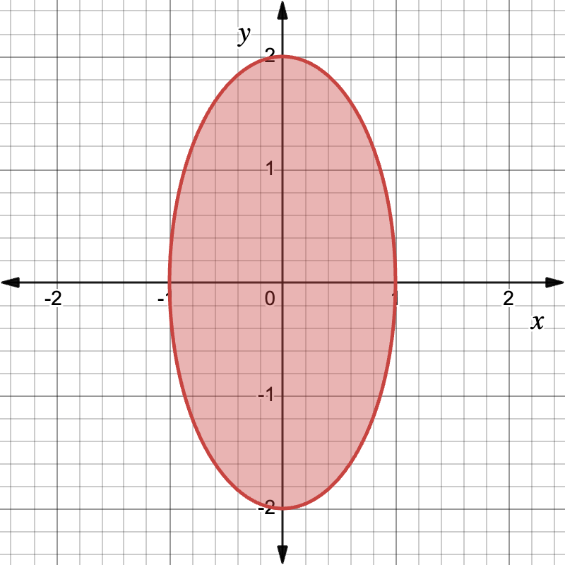
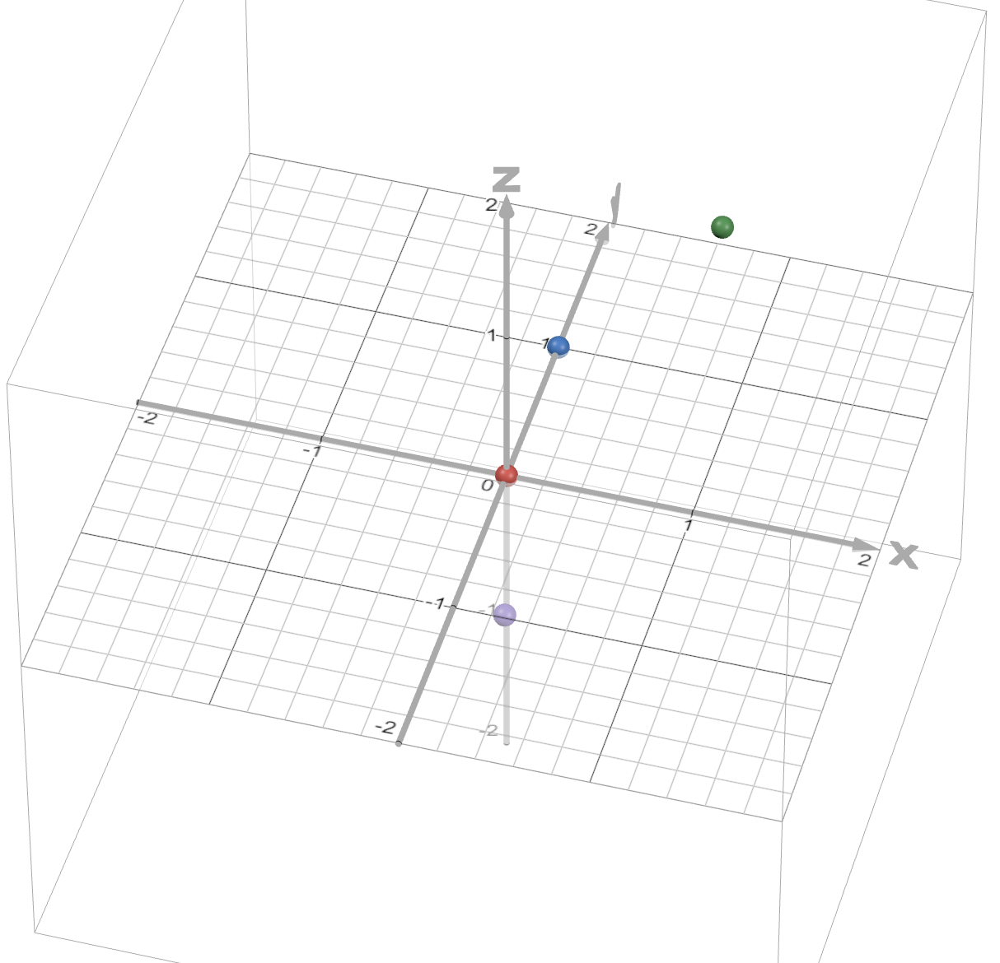
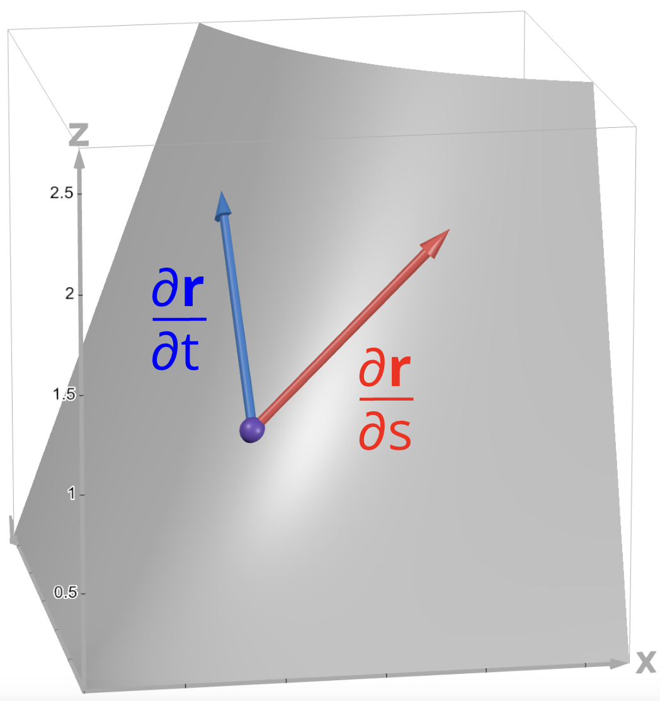

unnamed multivar website: Interactive and simple multivariable calculus explanations!
This is a continuation of unnamed calc website, my website for single-variable calculus explanations.
Table of Contents
Website Info (start here!)
Units
- Unit 1: Vectors and 3D Space
- Unit 2: Vector-Valued Functions
- Unit 3: Multivariable Derivatives
- Unit 4: Multiple Integrals
- Unit 5: Line and Surface Integrals
- Guest Explanations
Other
Website Update History (Last update: )
Important: You might have to refresh the tab to view the latest updates to this website.
2025-05-07: “It Is Done!” Update
With this update, almost everything in a typical multivariable calculus class is covered on this website! There are still a few smaller topics I haven’t covered, but I consider this website to be complete as of now. There are still many improvements and smaller things I want to add on this website, so I will definitely continue updating it in the future.
New Sections
- New Unit 2 section added:
- New Unit 5 section added:
Minor Changes
- The website logo has been changed to a 3D version of unnamed calc website’s logo (previously it was just the same as unnamed calc website but with “calc” crossed off and replaced with “multivar”).
- Removed all “this is a work in progress” text
2025-05-05: “Surface Integrals” Update
This update features a few sections about surface integrals (a way to integrate a function over a surface) as well as the divergence theorem, a way to write line or surface integrals as double or triple integrals of the divergence of a function. In addition, I’ve added a few sections about vector-valued functions. Current progress: 33/37 sections covered.
New Sections
- New Unit 2 sections added:
- New Unit 3 section added:
- New Unit 5 sections added:
Section Improvements
- Added level surfaces to “Contour Maps and Level Curves” section and renamed it to “Contour Maps, Level Curves, and Level Surfaces”
Minor Changes
- “Contour Maps, Level Curves, and Level Surfaces” section moved from Unit 1 to Unit 3
- Unit 5: Curl Operator: fixed typo in 3D curl formula
2025-04-21: “Line Integrals” Update
This update is all about line integrals: a way to integrate multivariable functions over any curve in the \(xy\)-plane! Current progress: 27/37 sections covered.
New Sections
- New Unit 5 sections added:
- New Unit 3 section added:
Minor Changes
- Added “My Other Websites” button to sidebar
2025-04-09: “Triple Integrals” Update
This update features more sections in Unit 4 (Multiple Integrals), primarily focused on triple integrals. Current progress: 22/37 sections covered.
New Sections
-
New sections added:
- Intro to Double Integrals (explains the limit definition of the double integral)
- Double Integrals: Finding Area and Mass
- Triple Integrals: Finding Volume and Mass
- Intro to Cylindrical and Spherical Coordinates
- Triple Integrals in Cylindrical Coordinates
- Triple Integrals in Spherical Coordinates
- Change of Variables for Multiple Integrals
- Double Integrals: Finding Surface Area
- Explanation of matrices and determinants is now its own section: Matrices and Determinants
Section Improvements
- Unit 3: Lagrange Multipliers: mentioned that \(\lambda\) is known as the Lagrange multiplier
- Unit 4: Iterated Integrals and Double Integrals (Rectangular Regions): mentioned that evaluating double integrals using two separate integrals is known as an iterated integral
Minor Changes
- Added copyright and license information for this website to the Credits / Special Thanks section. Feel free to modify and re-release this website as long as you follow the terms of this website’s license!
- Renamed “Finding Volume Using Double Integrals (Rectangular Regions)” section to “Double Integrals: Iterated Integrals and Finding Volume Under Rectangular Regions”
- Renamed “Finding Volume Using Double Integrals (General Regions)” section to “Double Integrals: Finding Volume Under General Regions”
- Renamed “Finding Volume Using Double Integrals (Polar Coordinates)” section to “Double Integrals in Polar Coordinates”
- This website is now hosted on calculusgaming.com/multivar instead of chaddypratt.org/multivar
2025-03-24: “Double Integrals” Update
This update focuses on the different types of double integrals, as well as Lagrange multipliers, a technique to solve some types of optimization problems. Current progress: 16/37 sections covered.
New Sections
- New sections added:
Section Improvements
- Unit 1: Directional Derivatives and Gradient: now explains that gradients are perpendicular to contour lines
2025-03-12: “More Multivariable Derivative Stuff” Update
This update features more sections about multivariable derivatives and their applications. Current progress: 12/37 sections covered.
New Sections
2025-03-07: “Partial Derivatives” Update
This update features new sections about partial derivatives, the extension of the derivative to functions of multiple variables! Current progress: 9/37 sections covered.
New Sections
2025-03-03: Initial Release
This is the first version of this website to be released. It features some explanations about vectors and the 3D coordinate system. Current progress: 6/37 sections covered.
Website Content
- Unit 1: Vectors and 3D Space: In order to understand many of the concepts in multivariable calculus, you need to know about vectors and how to visualize graphs in 3D space. That’s what this unit is for!
- Guest Explanations: Why should I be the only one making calculus explanations? I plan on letting some of my friends contribute their own calculus explanations to this website. This first release comes with three explanations (Green’s Theorem, Stokes’ Theorem, and Generalized Stokes’ Theorem) from one of my friends Sami.
Website Settings
Switch to a dark theme for those of you studying calculus late at night! (This setting does not affect any of the images on this page, so they will stay bright.)
If the bright images in dark mode bother you, you can invert the colors of graphs using this setting. Warning: this will change the colors of points and curves on each graph, making graph captions inaccurate in some cases.
Scientific Notation Format
Control the way very large and small numbers are displayed on this website. (Primarily intended for those of you who enjoy incremental games!)
What Is This Website?
A note about links on this page: Internal links (links that bring you to another spot on this page) are colored in light blue. External links (links that open a different website) are colored in dark blue. External links will always open in a new tab.
This is a continuation of my single-variable calculus website, unnamed calc website, but this time with multivariable calculus! You can look at that page for more information on what this website is and why I made it.
The content on this page is heavily based on Khan Academy and Paul’s Online Notes. I recommend visiting these sites for more detailed multivariable calculus explanations!
This progress table is based on the Stewart Calculus textbook.
| Unit | Progress |
|---|---|
| 12. Vectors and the Geometry of Space | 6/6 |
| 13. Vector Functions | 4/4 |
| 14. Partial Derivatives | 7/8 |
| 15. Multiple Integrals | 9/10 |
| 16. Vector Calculus | 9/9 |
| All Units |
Unit 1: Vectors and 3D Space
Vector Basics
Multivariable calculus involves functions that have multiple inputs or output a list of multiple numbers. Because of this, the concept of vectors appears a lot in multivariable calculus.
There are two ways of thinking about what a vector is:
- A vector is a list of numbers (but can sometimes contain other things).
- A vector is a quantity with magnitude and direction.
I’m going to focus on the second way of thinking about vectors: that a vector is a quantity with magnitude and direction. What exactly does that mean? Usually, we think of vectors graphically as arrows on the coordinate plane.
I will be discussing 2D vectors here (vectors with 2 values that can be drawn in 2 dimensions), but a lot of the concepts are similar for 3D vectors and vectors with even more dimensions.
The arrow from point A to point B is a vector since it has a magnitude (i.e. length) and a direction. It is a 2D vector since it is on a 2-dimensional coordinate plane. (Note: vectors can begin anywhere on the coordinate plane. In this diagram, point A is at the origin, but it doesn’t have to be. What determines the vector is the displacement between the two points.)
2D vectors have an \(x\)-component and a \(y\)-component. The \(x\)-component is the horizontal displacement of the vector and the \(y\)-component is the vertical displacement. In the diagram above, the vector has an \(x\)-component of 3 and a \(y\)-component of 4. The \(x\)-component and \(y\)-component can also be negative (represented by an arrow pointing to the left or down respectively).
Vectors are usually notated with a letter in bold, such as \(\mathbf{v}\). There are multiple ways to notate the components of a vector. One way is to write them like coordinates, so for example the vector in the above diagram is \(\mathbf{v} = (3, 4)\). The first value is the \(x\)-component and the second value is the \(y\)-component of the vector.
Another way is to write the vector in terms of the unit vectors \(\mathbf{i} = (1, 0)\) and \(\mathbf{j} = (0, 1)\). In this notation, our vector can be written as \(\mathbf{v} = (3, 4) = (3, 0) + (0, 4) = 3\mathbf{i} + 4\mathbf{j}\). The coefficient of \(\mathbf{i}\) is the \(x\)-component and the coefficient of \(\mathbf{j}\) is the \(y\)-component of the vector.
To find the magnitude (i.e. length) of a vector (denoted by \(||\mathbf{v}||\)), we can use the Pythagorean Theorem. Notice how in the diagram above, the \(x\)- and \(y\)-components form a right triangle with the vector. In this case, the magnitude of the vector \(\mathbf{v} = (3, 4)\) is \(||\mathbf{v}|| = \sqrt{3^2 + 4^2} = 5\).
The magnitude of a three-dimensional vector \((a, b, c)\) is equal to \(\sqrt{a^2 + b^2 + c^2}\). For a 4D vector \((a, b, c, d)\), the magnitude is equal to \(\sqrt{a^2+b^2+c^2+d^2}\), and the pattern continues for higher dimensions.
Vector operations
We can multiply a vector by a scalar (i.e. a single number). To do that, we just multiply each component of the vector by the scalar. If \(\mathbf{v} = (1, 2)\), then \(4\mathbf{v} = (4\cdot 1, 4\cdot 2) = (4, 8)\). This scalar can also be -1, i.e. we can find the negative of a vector by multiplying all components by -1. In our example, \(-\mathbf{v} = (-1, -2)\).
We can add two vectors by adding their components together. For example, if \(\mathbf{v} = (1, 2)\) and \(\mathbf{w} = (3, 4)\), then \(\mathbf{v} + \mathbf{w} = (1 + 3, 2 + 4) = (4, 6)\).
To add two vectors visually, first place the tail of the second vector at the head of the first vector. Then the sum of the vectors will be the vector that goes from the tail of the first vector to the head of the second vector.

Similarly, we can subtract two vectors by subtracting their components. If \(\mathbf{v} = (1, 2)\) and \(\mathbf{w} = (3, 4)\), then \(\mathbf{w} - \mathbf{v} = (3 - 1, 4 - 2) = (2, 2)\).
There are two ways to visualize this: the first is to add the vectors \(\mathbf{w}\) and \(-\mathbf{v}\) to get \(\mathbf{w} - \mathbf{v}\).

The second way is to draw the vectors for \(\mathbf{v}\) and \(\mathbf{w}\). The vector that goes from the head of \(\mathbf{v}\) to the head of \(\mathbf{w}\) is \(\mathbf{w} - \mathbf{v}\).

This diagram shows that \(\mathbf{v} + (\mathbf{w} - \mathbf{v}) = \mathbf{w}\).
The 3D Coordinate System
In previous calculus classes, you dealt with functions involving a single input and a single output. These are known as single-variable functions, and the way we typically visualize them is with 2-dimensional graphs: one dimension for the input variable and one dimension for the output variable.
But in multivariable calculus, we often deal with functions with more than one input (these are known as multivariable functions). To visualize these functions, we need more than 2 dimensions!
Often, we use 3-dimensional graphs to visualize functions with two inputs. But how do 3D graphs work? That’s what I’m going to discuss now!
In two-dimensional graphs, we have two axes: the \(x\)-axis and the \(y\)-axis. When we introduce a third dimension, we need to add a new axis: the \(z\)-axis, that is perpendicular to the other two axes.

In two dimensions, the point \((x, y)\) would be plotted \(x\) units along the \(x\)-axis and \(y\) units along the \(y\)-axis. In three dimensions, we do something similar: the point \((x, y, z)\) would be plotted \(x\) units along the \(x\)-axis, \(y\) units along the \(y\)-axis, and \(z\) units along the \(z\)-axis.

This is the point \((\class{blue}{1}, \class{green}{2}, \class{purple}{3})\) plotted in 3D space. It is plotted 1 unit along the \(x\)-axis, 2 units along the \(y\)-axis, and 3 units along the \(z\)-axis.
We can also create vectors in 3D space. For example, this is the vector \((1, 2, 3)\):

In 3D space, the unit vectors are \(\mathbf{i} = (1, 0, 0)\), \(\mathbf{j} = (0, 1, 0)\), and \(\mathbf{k} = (0, 0, 1)\).
In 3D space, there are three coordinate planes - planes formed by two of the axes:
- The \(xy\)-plane contains the \(x\)- and \(y\)-axes and contains all points with a \(z\)-coordinate of 0.
- The \(yz\)-plane contains the \(y\)- and \(z\)-axes and contains all points with an \(x\)-coordinate of 0.
- The \(xz\)-plane contains the \(x\)- and \(z\)-axes and contains all points with a \(y\)-coordinate of 0.
A graph of the \(xy\)-plane.

A graph of the \(yz\)-plane.
A graph of the \(xz\)-plane.
Vectors: Dot Product
There are some operations we can perform between two vectors. One of the most common operations is the dot product. The dot product of two vectors \(\mathbf{a}\) and \(\mathbf{b}\) is denoted by \(\mathbf{a} \cdot \mathbf{b}\).
There are two ways of thinking of the dot product.
The dot product as a sum of products
To find the dot product of two vectors, you multiply corresponding components together, then sum up all of the products. Here’s an example:
Notice that the result of a dot product is a scalar (a single number), not a vector.
The geometric meaning of the dot product
The dot product can also be found with this formula:
In this formula, \(\theta\) is the angle between the two vectors \(\mathbf{a}\) and \(\mathbf{b}\).
Notice that \(\cos(\theta)\) is close to 1 if \(\theta\) is close to 0, and \(\cos(\theta)\) is close to 0 if \(\theta\) is close to 90 degrees. So in general, if two vectors are pointing in roughly the same direction, their dot product will be larger. If two vectors are pointing in exactly the same direction, then the dot product is the product of the vectors’ magnitudes.
If \(\theta\) is exactly 90 degrees (or \(\frac{\pi}{2}\) radians), then \(\cos(\theta) = 0\). This means that the dot product between two perpendicular vectors is zero. Two vectors are called orthogonal if this is the case (i.e. if \(\mathbf{a} \cdot \mathbf{b} = 0\), then \(\mathbf{a}\) and \(\mathbf{b}\) are orthogonal vectors).
The dot product can also be negative if \(\cos(\theta)\) is negative. This happens when \(\theta\) is in between 90 and 180 degrees (\(\frac{\pi}{2}\) and \(\pi\) radians).
Play around with these two unit vectors (vectors with magnitude 1). What do you notice about the dot product?
Control the vectors’ angles using these sliders:
\(\theta \approx\)
\(\theta \approx\)
Dot Product \(\approx\)
Matrices and Determinants
In multivariable calculus, we will sometimes be dealing with matrices. A matrix is a 2D grid of numbers. Here’s an example of a matrix:
A matrix that has \(m\) rows and \(n\) columns is known as an \(m \times n\) matrix. For example, the above matrix is a \(3 \times 4\) matrix.
Sometimes, we will be studying the determinants of matrices. The determinant is a special number you can calculate from a square matrix (a matrix with the same number of rows and columns). Here’s an example:
Imagine we have this \(2 \times 2\) matrix:
The determinant of this matrix, denoted by \(\det(A)\), is calculated as follows:
The determinant of a \(3 \times 3\) matrix is more complicated:
That just looks like a huge mess at first! Let’s break it down.
The first term in the sum is:
Notice how the exponent on the -1 term is \(\class{red}{1} + \class{blue}{1}\), while the coefficient in front of it is \(a_{\class{red}{1}\class{blue}{1}}\), corresponding to the element on the 1st row and 1st column of the matrix.
What about the determinant part? Notice how we’re finding the determinant of a smaller \(2 \times 2\) matrix. This matrix is just the \(3 \times 3\) matrix \(A\) but without the elements in the 1st row and the 1st column.
The next term is:
Once again, the exponent on the -1 term (\(\class{red}{1} + \class{blue}{2}\)) is the sum of the row and column number of the coefficient \(a_{\class{red}{1}\class{blue}{2}}\). We are multiplying these terms by the determinant of a \(2 \times 2\) matrix which is matrix \(A\) but without the 1st row and 2nd column.
Finally, we see this pattern continue with the last term:
The exponent on the -1 is the sum of the row and column number, and we are once again multiplying by a modified version of matrix \(A\) without the 1st row and 3rd column.
However, this isn’t the only way we can calculate the determinant of \(A\). In the previous example, we used what’s known as the Laplace expansion along the first row of the matrix (since the coefficients \(a_{11}\), \(a_{12}\), \(a_{13}\) come from the first row of matrix \(A\)).
The Laplace expansion works for any row or any column of the matrix! For example, here’s the expansion along the 2nd column:
When we find the determinant of a \(3\times 3\) matrix, we will most often use the Laplace expansion along the first row (although it’s not the only way to find the determinant).
Vectors: Cross Product
The cross product is another operation we can perform between two vectors. The cross product of \(\mathbf{a}\) and \(\mathbf{b}\) is denoted by \(\mathbf{a} \times \mathbf{b}\).
While the dot product works with vectors with any number of dimensions (as long as the two vectors have the same number of dimensions), the cross product only works with two 3D vectors.
While the dot product of two vectors is a scalar, the cross product of two vectors is another vector. Specifically, the cross product of two vectors is a third vector that is perpendicular to the other two vectors.
There are once again two formulas for the cross product.
The cross product as a determinant
The cross product of two vectors can be calculated with a few multiplications and subtractions. If \(\mathbf{a} = (a_1, a_2, a_3)\) and \(\mathbf{b} = (b_1, b_2, b_3)\), then:
This is not an easy formula to remember! Luckily, there is an easier way to remember this, but it does require you to be familiar with matrices and determinants.
This formula can be written as the determinant of a \(3\times 3\) matrix as follows:
The first row of the matrix contains the unit vectors \(\mathbf{i}\), \(\mathbf{j}\), and \(\mathbf{k}\), the second row of the matrix contains the components of the first vector, and the third row contains the components of the second vector.
The geometric meaning of the cross product
Just like the dot product, there is a geometric formula for the cross product:
\(\theta\) is the angle between \(\mathbf{a}\) and \(\mathbf{b}\), and \(\mathbf{n}\) is a unit vector perpendicular to both \(\mathbf{a}\) and \(\mathbf{b}\) (the exact vector to use is based on the right-hand rule - more on that later).
This means that the magnitude of the cross product of two vectors \(\mathbf{a}\) and \(\mathbf{b}\) is:
This can be interpreted as the area of the parallelogram formed by the vectors \(\mathbf{a}\) and \(\mathbf{b}\).
The area of the parallelogram is equal to \(||\mathbf{a}\times\mathbf{b}|| = ||\mathbf{a}|| \: ||\mathbf{b}|| \: \lvert\sin(\theta)\rvert\).
The cross product of two vectors is a third vector that is perpendicular to both of them. However, in 3D space, there are two vectors that are perpendicular to any set of two nonzero vectors. How do we know which one to use?
That’s what the right-hand rule tells us. If you point the index finger of your right hand in the direction of \(\mathbf{a}\), then point your middle finger in the direction of \(\mathbf{b}\), then extend your thumb, your thumb will point in the direction of \(\mathbf{a} \times \mathbf{b}\).

Here’s an example of how we would find the cross product of two vectors.
The cross product \(\mathbf{a} \times \mathbf{b}\) is perpendicular to both the vectors \(\mathbf{a}\) and \(\mathbf{b}\).
Problem: What is the cross product of the vectors \(\mathbf{a} = (5, -2, 8)\) and \(\mathbf{b} = (10, 0, 1)\)?
Using the formula directly:
Using the determinant form of the formula:
Don’t forget the negative sign before the second term when calculating the determinant (in this case, the coefficient of \(\mathbf{j}\))!
3D Space: Equations of Lines
How do we graph a line in 3D space? Before we answer this, let’s first think about how we could graph a line in 2D.
In two dimensions, we can graph a line by choosing a point on that line, then specifying the slope of the line. This is the point-slope form of a line: the line that passes through the point \((x_0, y_0)\) with slope \(m\) is:
In three dimensions, however, we can’t just describe the slope of a line with one number. Instead, we need to use a 3D vector to describe the direction that the line goes in.
So what we could do instead is take two points that are on the line, then draw a vector between those two. Let’s see how this would work in 2D first.
Let’s say we want to find the equation of the line that passes through point \(A = (1, 2)\) and point \(B = (2, 5)\). We can get a vector parallel to this line by subtracting one point from the other. In this case, that vector would be \(\mathbf{v} = (2-1, 5-2) = (1, 3)\).

Now let’s imagine a point moving with this velocity vector. As time passes, the point will trace out our line.
How can we describe the movement of this point with a function? We can use a vector-valued function - a function that outputs a vector.
Imagine a point at point \(A\) and moving towards point \(B\). Its velocity vector would be equal to the vector \(\mathbf{v}\) we found before. Its position at time \(t\) would be:
\(\mathbf{a}\) is the position vector corresponding to point \(A\) (in this case, \((1, 2)\)).
This is known as the vector form for the equation of a line. As \(t\) ranges across all real numbers (negative and positive), the point corresponding to \(f(t)\) will draw out the line.
\(t =\)
We can generalize this concept to three dimensions. Let me demonstrate this with an example:
Problem: What is the equation of the line that passes through the points \(A = (-2, 3, 2)\) and \(B = (3, 0, 1)\)?
First, we need to find a vector that is parallel to the line. The easiest way to do this is to find the vector that goes from point \(A\) to point \(B\) (since this vector is on the line, it will also be parallel to the line). To find this vector, we subtract the coordinates of point \(A\) from point \(B\).

The vector \(\class{green}{\mathbf{v} = (5, -3, -1)}\) starts at point \(A\) and ends at point \(B\), and it is parallel to the line since it’s on the line.
The vector form for the equation of a line in 3D space is:
\((x_0, y_0, z_0)\) is a point on the line (with \(\mathbf{r_0}\) being the corresponding position vector), and \(\mathbf{v} = (a, b, c)\) is a vector that is parallel to the line. Just like with the 2D equation, as \(t\) ranges across all real numbers, the vector \(\mathbf{r}\) traces out the line.
Back to our example now. \(\mathbf{r_0}\) can be the position vector corresponding to either of our points. So for our example, the vector form based on point \(A\) is:
And the vector form based on point \(B\) is:
This is not the only way we can describe a line in 3D. We can convert this vector form into a set of parametric equations:
This is the parametric form for the equation of a line. For our problem, the parametric form based on point \(A\) is:
Based on point \(B\), the parametric equations are:
Finally, if we solve for \(t\) in each of the equations in the parametric form, we get these equations:
The right-hand sides of all three of these equations are equal to \(t\), so they are equal to each other. Therefore:
This is the symmetric equation of a line. In this case, the symmetric equations that pass through \((-2, 3, 2)\) and \((3, 0, 1)\) are:
This equation is using point \(A\) for the coordinates \((x_0, y_0, z_0)\).
This equation is using point \(B\) for the coordinates \((x_0, y_0, z_0)\).
3D Space: Equations of Planes
We can also find the equations of planes in 3D space.
One way to uniquely identify a plane in 3D is to specify three points on that plane (as long as they’re not on the same line). However, to actually find the equation of a plane, there is another, more helpful way to define a plane.
All we need is one point on the plane and a normal vector to that plane (a vector perpendicular to the plane).

We can define a plane using a point on the plane and a normal vector.
Let’s call this point \(P_0\), the vector corresponding to this point \(\mathbf{r_0}\), and the normal vector \(\mathbf{n}\).
Why is this useful? Because if we choose a second point on the plane, then draw a vector from the first point to the second, that vector will lie completely within the plane. So this vector will be orthogonal to the normal vector, which means that the dot product of the two vectors will be zero.

The normal vector and the vector between the two points are orthogonal, so their dot product is zero.
So we can define this plane as the set of all possible points \(P\) such that the vector between \(P\) and \(P_0\) is orthogonal to the normal vector (i.e. the dot product is zero). If we define the vector \(\mathbf{r}\) to be the vector corresponding to \(P\), this means:
This is the vector equation of a plane. If we write out the components of the vectors with \(\mathbf{n} = (a, b, c)\), \(\mathbf{r} = (x, y, z)\), and \(\mathbf{r_0} = (x_0, y_0, z_0)\), we get:
This is the scalar equation of a plane.
Problem: What is the equation of the plane that passes through the points \(A = (4, -2, 3)\), \(B = (0, 1, 3)\), and \(C = (-1, -5, 1)\)?
First, we need to find a normal vector for this plane. How could we do this?
If we had two vectors that were on the plane, then found the cross product of those two vectors, that would give us a vector that is perpendicular to both of those vectors (and the plane itself), which would be a normal vector!
So let’s find two vectors that are on the plane. We can do that by finding vectors between two of our points. Here’s the vector that goes from point \(A\) to point \(B\):
And here’s the vector that goes from point \(A\) to point \(C\):
These are not the only two vectors we can use; there are many more possible pairs of points we can use to define our vectors.
Now let’s find the cross product of these vectors:
Remember that in the scalar equation of the plane \((a,b,c)\) is the normal vector and \((x_0, y_0, z_0)\) is any point on the plane (we’ll use point \(A\) for this example, but points \(B\) and \(C\) would also work). So the equation is:
3D Space: Quadric Surfaces
Quadric surfaces are graphs in 3D space that are defined by an equation in the form:
Here, \(P(x, y, z)\) is a quadratic polynomial in terms of \(x\), \(y\), and \(z\). This can also be written as:
The values \(A\) through \(J\) are constants.
Here are some examples of different types of quadric surfaces, along with their general equations.
Ellipsoid, \(\displaystyle\frac{x^2}{a^2} + \frac{y^2}{b^2} + \frac{z^2}{c^2} = 1\)

Note: If \(a = b = c\), then the ellipsoid is a sphere.
Cone, \(\displaystyle\frac{x^2}{a^2} + \frac{y^2}{b^2} = \frac{z^2}{c^2}\)

Cylinder, \(\displaystyle\frac{x^2}{a^2} + \frac{y^2}{b^2} = 1\)
Hyperboloid of One Sheet, \(\displaystyle\frac{x^2}{a^2} + \frac{y^2}{b^2} - \frac{z^2}{c^2} = 1\)

Hyperboloid of Two Sheets, \(\displaystyle-\frac{x^2}{a^2} - \frac{y^2}{b^2} + \frac{z^2}{c^2} = 1\)
Elliptic Paraboloid, \(\displaystyle\frac{x^2}{a^2} + \frac{y^2}{b^2} = \frac{z}{c}\)

Hyperbolic Paraboloid, \(\displaystyle\frac{x^2}{a^2} - \frac{y^2}{b^2} = \frac{z}{c}\)

Unit 2: Vector-Valued Functions
Unit 9 of unnamed calc website covers the basics of vector-valued functions as well as differentiation and integration of vector-valued functions, so I won’t be including them here.
Tangent and Normal Vectors
When we differentiate a vector-valued function \(\mathbf{r}(t)\), we get another vector-valued function \(\mathbf{v}(t)\) that tells us the velocity vector at any time \(t\). This vector is tangent to the curve traced out by \(\mathbf{r}(t)\), so it’s also known as a tangent vector.
Note that the magnitude of \(\mathbf{r}'(t)\) must be nonzero for it to be a tangent vector, because otherwise it wouldn’t have a direction.
Sometimes we are interested in the unit tangent vector to a curve, which is the tangent vector of length 1. To find this unit tangent vector, we simply take the velocity/tangent vector and divide it by its magnitude.
Sometimes we also want to find a normal vector to a curve, or a vector that is perpendicular to the curve. It turns out there is a straightforward way to generate a normal vector: just differentiate the unit tangent vector function (i.e. \(\mathbf{T}'(t)\) will always be a normal vector, provided \(||\mathbf{T}'(t)|| \ne 0\)).
If we want to get a unit normal vector, a normal vector of length 1, then we divide by the normal vector’s magnitude.
In two dimensions, there is an alternative way to find a unit normal vector that is usually simpler: take the unit tangent vector, swap the components, then make one of them negative. If you want to rotate counterclockwise, then you should make the first component negative after swapping, and if you want to rotate clockwise, you should make the second component negative.
Problem: Find the unit tangent and unit normal vectors to the parametric curve defined by \(\mathbf{r}(t) = (t, t^2)\).
Let’s first find the tangent vector \(\mathbf{v}(t)\).
We then need to normalize this vector to get a unit tangent vector. We do this by dividing by the magnitude of \(\mathbf{v}(t)\).
To find the unit normal vector \(\mathbf{N}(t)\) the standard way, we first need to differentiate \(\mathbf{T}(t)\) and find the magnitude of \(\mathbf{T}'(t)\):
By dividing \(\mathbf{T}'(t)\) by its magnitude, we can get the unit normal vector \(\mathbf{N}(t)\):
Notice how the unit normal vector \(\mathbf{N}(t)\) is just the unit tangent vector \(\mathbf{T}(t)\) but with the components swapped and one of the components made negative. This is a much simpler way to find the unit normal vector if we’re working in 2D.
The unit tangent and unit normal vectors to the parametric curve \(\mathbf{r}(t) = (t, t^2)\) at \(t = 1\).
Arc Length of Vector-Valued Functions
As a reminder, the arc length of a parametric curve defined by \(x(t)\) and \(y(t)\) from \(t = a\) to \(t = b\) in two dimensions is:
In three dimensions, if we have the parametric functions \(x(t)\), \(y(t)\), and \(z(t)\), the formula becomes:
If we instead use a vector valued function to represent the curve by defining \(\mathbf{r}(t) = (x(t), y(t), z(t))\), then this inner term \(\sqrt{[x'(t)]^2 + [y'(t)]^2 + [z'(t)]^2}\) turns out to be the magnitude of \(\mathbf{r}'(t)\). So we can write the arc length equation as simply:
One way to intuitively understand this formula is that \(||\mathbf{r}'(t)|| \dd{t}\) represents the distance traveled when you change \(t\) by a tiny amount (the length of a tiny step along the curve), and if you sum up the lengths of all the steps from \(t = a\) to \(t = b\) by integrating, you get the total distance traveled along the entire journey.
Problem: Find the arc length of the curve defined by the vector-valued function \(\mathbf{r}(t) = (\cos(t), \sin(t), t)\) from \(t = 0\) to \(t = 2\pi\).
Let’s find the velocity vector \(\mathbf{r}'(t)\) first:
And let’s find the magnitude of this velocity vector:
Now, we can perform the final integral to find the total arc length:
Curvature of Parametric Graphs
When we have a parametric graph, we can measure how much the graph curves at a point by calculating its curvature.
The curvature is equal to 1 divided by the radius of curvature at a point, which you can think of as being the radius of a circle that most closely fits the curve at a point.
The curvature at a point on a parametric curve is equal to the reciprocal of the radius of a circle that best fits the curve.
If this circle is small, then the graph is curving a lot at that point, and if the circle is large, then the graph is not curving very much. This is why curvature is the reciprocal of the radius of curvature.
The curvature \(\kappa\) (kappa) can also be defined as:
This is basically measuring how much the unit tangent vector to a curve changes with respect to arc length (not time!)
The previous formula is hard to deal with, so here are some alternate formulas:
If we have a parametric curve in two dimensions defined by \(x(t)\) and \(y(t)\), we can use this formula:
And if we have a parametric curve in three dimensions defined by \(\mathbf{r}(t)\), we can use this:
Problem: Find the curvature at time \(t\) for the parametric curve defined by \(x(t) = t-\sin(t)\) and \(y(t) = 1-\cos(t)\). What is the curvature at \(t = \pi\)?
It’s easier for us to use the two-dimensional curvature formula in this case, so let’s use that.
First, we need to find the first and second derivatives of \(x(t)\) and \(y(t)\).
Now we can plug in these values into the formula:
The curvature at \(t = \pi\) is equal to:
This means the radius of curvature at \(t = \pi\) is 4.
The curvature of the parametric graph defined by \(x(t) = t - \sin(t)\) and \(y(t) = 1-\cos(t)\) at \(t = \pi\) is \(\frac{1}{4}\), meaning that the radius of curvature is 4, as shown in the above diagram.
Tangential and Normal Components of Acceleration
We can find the acceleration of a particle moving in space by finding the second derivative of its position. If a particle’s position at time \(t\) is described by the function \(\mathbf{r}(t)\), then its acceleration at time \(t\) is \(\mathbf{a}(t) = \mathbf{r}''(t)\).
We can further break down this acceleration into its tangential and normal components. The tangential component \(a_T\) of acceleration tells us the part of the particle’s acceleration that is tangent to the path the particle is traveling along. The normal component \(a_N\) of acceleration tells us the portion of acceleration that is normal to the path. Note that \(a_T\) and \(a_N\) are both scalar values.
We can write the particle’s overall acceleration \(\mathbf{a}(t)\) as \(a_T \mathbf{T}(t) + a_N \mathbf{N}(t)\), where \(\mathbf{T}(t)\) is the particle’s unit tangent vector and \(\mathbf{N}(t)\) is the particle’s unit normal vector.
The tangential component of acceleration \(a_T\) can be defined as the rate of change of the magnitude of the particle’s velocity:
The tangential component can also be calculated as follows:
\(\mathbf{T}(t)\) is the unit tangent vector at time \(t\).
The normal component of acceleration can be calculated with this formula:
Alternatively, the normal component can be calculated like this:
\(\mathbf{N}(t)\) is the unit normal vector at time \(t\).
Problem: Find the tangential and normal components of acceleration for a particle whose position is given by the function \(\mathbf{r}(t) = (t^3, t^2, t)\).
We first need to find the velocity and acceleration vectors:
Now let’s find the magnitude of the velocity vector, since we’ll need it to calculate both the tangential and normal components:
Now we’re ready to calculate the tangential component:
To calculate the normal component, we’re going to need the cross product of the velocity vector and acceleration vector:
Now we need the magnitude of this cross product:
We can put this all together to find the normal component of acceleration:
Unit 3: Multivariable Derivatives
Functions of Multiple Variables
What is a multivariable function?
Up until now, you’ve likely only studied functions with one input, such as \(f(x) = x^2\). However, in multivariable calculus, we study functions with multiple inputs, such as \(f(x, y) = x^2 + y^2\).
Functions of a single variable take a single input and perform some operations on it to turn it into a different number.
Here’s an example of a single-variable function. Use the slider to control the value of the input \(x\).
\(f(x) = x^2\)
\(x =\)
\(f(x) \approx\)
However, functions of multiple variables (also known as multivariable functions) take in multiple inputs and perform operations on them to produce a single output number.
Here’s an example of a function of two variables. Use the sliders to control the value of the two inputs \(x\) and \(y\).
\(f(x, y) = x^2 + y^2\)
\(x =\)
\(y =\)
\(f(x, y) \approx\)
Multivariable functions can have more than two inputs. For example, here’s one with three variables:
\(f(x, y, z) = x^2 + y^2 + z^2\)
\(x =\)
\(y =\)
\(z =\)
\(f(x, y, z) \approx\)
Graphing multivariable functions
Now let’s move on to graphing functions of two variables. Let’s review how we graph functions of a single variable, such as \(f(x) = x^2\). One way we can do so is by making a table of values for \(x\) and \(f(x)\). Each row in the table corresponds to a point \((x, f(x))\).
| \(x\) | \(f(x)\) | \((x, f(x))\) |
|---|---|---|
| -2 | 4 | (-2, 4) |
| -1 | 1 | (-1, 1) |
| 0 | 0 | (0, 0) |
| 1 | 1 | (1, 1) |
| 2 | 4 | (2, 4) |
We can graph the function by plotting these points.
As we plot more points, the graph becomes a smooth curve. You can imagine the graph of the function as all possible points of the form \((x, f(x)\)).

The equation of this line is \(y = x^2\). Notice how this is the same as the function definition \(f(x) = x^2\), except we’ve replaced \(f(x)\) with \(y\). This is because when we’re graphing a single-variable function in 2D, we use the \(y\)-axis to represent the output values of the function (i.e. the values that \(f(x)\) takes on for all \(x\)-values).
We can do something similar for a function of two variables, such as \(f(x, y) = x^2 + y^2\). This time, instead of plotting the points \((x, f(x))\), we’re going to plot the points \((x, y, f(x, y))\). Since we now have two inputs to our function, we need the first two coordinates to correspond to our inputs, and the third coordinate to correspond to the output.
| \(x\) | \(y\) | \(f(x, y)\) | \((x, y, f(x, y))\) |
|---|---|---|---|
| -1 | -1 | 2 | (-1, -1, 2) |
| 0 | -1 | 1 | (0, -1, 1) |
| 1 | -1 | 2 | (1, -1, 2) |
| -1 | 0 | 1 | (-1, 0, 1) |
| 0 | 0 | 0 | (0, 0, 0) |
| 1 | 0 | 1 | (1, 0, 1) |
| -1 | 1 | 2 | (-1, 1, 2) |
| 0 | 1 | 1 | (0, 1, 1) |
| 1 | 1 | 2 | (1, 1, 2) |
This is the result of graphing these points:
If we graph all possible points of the form \((x, y, f(x, y))\), we get the 3D graph of the function:

The equation of this graph is \(z = x^2 + y^2\), which is the same as the function definition \(f(x, y) = x^2 + y^2\) except that \(f(x, y)\) is replaced with \(z\). That’s because for functions of 2 variables, we use the \(z\)-axis to represent the possible output values of the function, with the \(x\)- and \(y\)-axis being used to represent each input variable of the function.
Graphing functions of 3 or more variables takes at least 4 dimensions this way, so we’re not going to be graphing these types of functions like this.
Contour Maps, Level Curves, and Level Surfaces
Contour maps are an alternative to graphing functions of two variables. Instead of using three dimensions to graph both the inputs and outputs of the function, we use two dimensions and graph all input points that result in a certain output.
This will make more sense with an example. Here’s how we would create a contour map for the function \(f(x, y) = x^2 + y^2\).
First, we graph all of the input points that result in \(f(x, y)\) having a certain value (let’s say 1). Here’s what that looks like:
These are all of the input points \((x, y)\) which will cause \(f(x, y) = x^2 + y^2\) to equal 1. This is just the graph of \(x^2 + y^2 = 1\).
A curve like this is known as a level curve, contour line, or contour curve.
Now let’s do the same, but with a different value. Here’s what the graph looks like after adding the level curve for \(f(x, y) = 2\):

We’ve added the input points \((x, y)\) which will cause \(f(x, y) = x^2 + y^2\) to equal 2.
We can continue to add these level curves. Here’s the result after adding a few more level curves:

This is just one of the possible contour maps we can create for the function \(f(x, y) = x^2 + y^2\). We can create different contour maps using different level curves. For example, here’s a contour map, this time going by intervals of 2 (so we have level curves for \(f(x, y) = 2\), \(f(x, y) = 4\), etc.)

The three-dimensional equivalent of a level curve is a level surface. It represents all points \((x, y, z)\) in 3D space where a function of three variables \(f(x, y, z)\) equals a constant \(c\). Here are some examples:
The level surface for \(f(x) = x + y + z = 1\).
The level surface for \(f(x) = x^2yz^3 = 4\).
Intro to Partial Derivatives
Recall that a derivative tells you the rate of change of a function as you change its input. But so far, we’ve only worked with functions that take in one variable as input, like \(f(x) = x^2\). Can we still find derivatives for functions with inputs of multiple variables, like \(f(x, y) = x^2y\)?
The answer is yes, and to do so, we’ll have to use partial derivatives. A partial derivative tells you how a function of multiple variables changes as you change one of the variables.
Problem: Find the partial derivative with respect to \(x\) of the function \(f(x, y) = x^2y\).
We want to find how this function’s value changes as we change \(x\), so let’s keep \(y\) constant. What if we keep \(y\) at a constant value of 2?
Notice that if we fix \(y\) at a value of 2, our function essentially becomes \(f(x) = 2x^2\). We have a function of one variable now, so we can differentiate it as we normally would.
In this case, the derivative with respect to \(x\) is \(4x\). What this means is that when we keep \(y\) at a constant value of 2, as we change \(x\), the expression \(4x\) will tell us the rate of change of the function’s value.
If we keep \(y\) fixed at 2, what happens to the function’s value as we change \(x\)?
\(f(x, y) = x^2y\)
\(x =\)
\(f(x, 2)\) =
Partial derivative (rate of change) with respect to \(x\):
But what if \(y\) wasn’t fixed at 2, but another value? Let’s say that we fixed the value \(y\) at an arbitrary constant \(c\).
Doing this means our function becomes \(f(x) = cx^2\) (we got this by replacing \(y\) in our original function \(f(x,y) = x^2y\) with \(c\)). Differentiating this with respect to \(x\), treating \(c\) as a constant, gives us the expression \(2cx\).
This means that whatever constant \(c\) we set \(y\) to, as we change \(x\), the function’s value changes at a rate of \(2cx\).
When we find expressions for partial derivatives, we don’t change \(y\) to \(c\), so the partial derivative with respect to \(x\) would actually be written as \(2xy\).
Here are two of the ways to denote this partial derivative:
What this is saying is that if we keep \(y\) fixed at a value and change \(x\), the rate of change of \(f(x, y)\) is equal to \(2x\) times whatever value we kept \(y\) at.
A faster way we could have found this partial derivative is to treat \(y\) as a constant and differentiate with respect to \(x\).
Here, we treat \(y\) as a constant, so we don’t need to use the product rule.
Problem: Find the partial derivative with respect to \(y\) of the function \(f(x, y) = x^2y\).
To find the partial derivative with respect to \(y\), we treat \(x\) as a constant and differentiate with respect to \(y\):
Now we’re keeping \(x\) fixed at 2 and changing \(y\). What is the rate of change of the function as we change \(y\)?
\(f(x, y) = x^2y\)
\(y =\)
\(f(2, y)\) =
Partial derivative (rate of change) with respect to \(y\):
Notice how the rate of change stays fixed at 4. This makes sense because the partial derivative of \(f(x, y)\) with respect to \(y\) is \(x^2\), and because we’re keeping \(x\) fixed at 2, in this case the rate of change is \(2^2 = 4\).
Since we’re going to be finding a lot of partial derivatives in multivariable calculus, let’s do some more examples.
Problem: Find the partial derivatives of \(f(x, y) = x^2\sin(y)\).
The partial derivative with respect to \(x\)
To find the partial derivative with respect to \(x\), we treat \(y\) as a constant. Because of this, \(\sin(y)\) is a constant, and so we don’t need to use the product rule. We can simply differentiate \(x^2\) with respect to \(x\) to get \(2x\), then multiply our result by \(\sin(y)\) (which we are treating as a constant).
Notice how we’re not differentiating \(\sin(y)\) with respect to \(y\), since we treat it as a constant when we’re finding the partial derivative with respect to \(x\).
The partial derivative with respect to \(y\)
To find the partial derivative with respect to \(y\), we treat \(x\) as a constant, and so we can also treat \(x^2\) as a constant. So we differentiate \(\sin(y)\) with respect to \(y\), then multiply by \(x^2\).
Notice how we’re not differentiating \(x^2\) with respect to \(x\), since we treat it as a constant when we’re finding the partial derivative with respect to \(y\).
Problem: Find the partial derivatives of \(f(x, y) = \displaystyle\frac{x^3}{x + \ln(y)}\).
The partial derivative with respect to \(x\)
Here, we still have to use the quotient rule even if we treat \(y\) as a constant. When you do use the quotient rule, remember to treat \(y\) as a constant (so for example, the derivative of \(x + \ln(y)\) with respect to \(x\) is simply 1).
The partial derivative with respect to \(y\)
We’re now going to use the quotient rule again, but this time we’re treating \(x\) as a constant.
Interpretations of partial derivatives
I’m going to go over a few different ways you can interpret a partial derivative now. Let’s start with an example.
Problem: How can we interpret the partial derivatives of \(f(x, y) = x^2y\) at the point \((1, 2)\)?
The partial derivative with respect to \(x\)
We found that the partial derivative of \(f(x, y) = x^2y\) with respect to \(x\) is \(2xy\), so if we keep \(y\) fixed at 2, the partial derivative is equal to \(4x\). So at the point \((1, 2)\), the partial derivative with respect to \(x\) is equal to 4.
We can interpret this as saying that if we start at the point \((1, 2)\) and we change \(x\) ever so slightly, the value of the function \(f(x, y)\) changes by about 4 times the amount of change (i.e. the function increases at a rate of 4).
The partial derivative with respect to \(y\)
We found that the partial derivative of \(f(x, y) = x^2y\) with respect to \(y\) is \(x^2\), so if we keep \(x\) fixed at 1, the partial derivative is equal to 1. So at the point \((1, 2)\), the partial derivative with respect to \(y\) is equal to 1.
We can interpret this as saying that if we start at the point \((1, 2)\) and we change \(x\) by a tiny amount, the value of the function \(f(x, y)\) changes by about that amount (i.e. the function increases at a rate of 1).
We can interpret a partial derivative as the slope of a trace of a function’s graph. A trace is the intersection of a 3D graph and a line that is parallel to either the \(x\)- or \(y\)-axis.
For example, here is the trace of the function \(f(x, y) = x^2y\) for \(y = 2\). You can think of this as either the intersection of the plane \(y = 2\) with the function’s graph, or all points on the function’s graph with a \(y\)-coordinate of 2.
We found that the partial derivative of \(f(x, y)\) with respect to \(x\) is 4 at the point \((\class{red}{1}, \class{blue}{2})\), i.e. as we increase \(x\), the function increases at a rate of 4. We can interpret this as saying that the trace of the function for \(y = \class{blue}{2}\) has a slope of 4 at \(x = \class{red}{1}\).

The trace at \(y = 2\) has a slope of 4 at \(x = 1\), as shown by the tangent line.
The partial derivative of \(f(x, y)\) with respect to \(y\) is 1 at the point \((\class{red}{1}, \class{blue}{2})\), i.e. as we increase \(y\), the function increases at a rate of 1. We can interpret this as saying that the trace of the function for \(x = \class{red}{1}\) has a slope of 1 at \(y = \class{blue}{2}\).

The trace at \(x = 1\) has a slope of 1 at \(y = 2\).
Partial Derivatives: Tangent Planes and Linear Approximations
With single-variable functions, we were able to use derivatives to find the tangent lines of functions, and these tangent lines served as linear approximations of functions.
We can do something similar with functions of two variables. However, in 3D space, not only can we find tangent lines, we can also find tangent planes.
Just like a tangent line just barely touches a graph at a single point, a tangent plane just barely touches a 3D graph at a single point.
How can we find this tangent plane? Let’s say that our point is at the coordinates \((x_0, y_0)\). We can consider the traces of this graph for \(x = x_0\) and \(y = y_0\).

These are the traces of the graph at \(\class{blue}{x = x_0}\) and \(\class{green}{y = y_0}\).
Now let’s consider the tangent lines to these traces at \((x_0, y_0)\). As we saw in the previous section, the slopes of these tangent lines are the partial derivatives of \(f(x, y)\) at \((x_0, y_0)\).
These are the tangent lines at \((x_0, y_0)\) to the traces of the graph at \(\class{blue}{x = x_0}\) and \(\class{green}{y = y_0}\).
Specifically:
- The slope of the tangent line to the \(\class{green}{y = y_0}\) trace at \((x_0, y_0)\) is the partial derivative with respect to \(x\) evaluated at \(y = y_0\) (i.e. \(f_x(x_0, y_0)\))
- The slope of the tangent line to the \(\class{blue}{x = x_0}\) trace at \((x_0, y_0)\) is the partial derivative with respect to \(y\) evaluated at \(x = x_0\) (i.e. \(f_y(x_0, y_0)\))
The tangent plane is the plane that contains both of these tangent lines.
To find the equation of this plane, we need to remember the equation of a plane in general:
Now let’s solve for \(z\):
Just to make things simpler, let’s replace the coefficients of \(x-x_0\) and \(y-y_0\) with \(A\) and \(B\) (i.e. \(A = -\frac{a}{c}\) and \(B = -\frac{b}{c}\)).
Now we just need to find the values of \(A\) and \(B\).
If we keep \(y\) fixed at \(y = y_0\), we are essentially just looking at points on the tangent plane where \(y = y_0\). This is just the tangent line to the trace at \(y = y_0\). The slope of this line is \(f_x(x_0, y_0)\).
Therefore, the coefficient \(A\) has to be \(f_x(x_0, y_0)\).
Similarly, if we keep \(x\) fixed at \(x = x_0\), we’re now looking at the tangent line to the trace at \(x = x_0\). The slope in this case is \(f_y(x_0, y_0)\).
Therefore, the coefficient \(B\) has to be \(f_y(x_0, y_0)\). So the equation of the tangent plane is:
\(z_0\) is the \(z\)-coordinate of the point at \((x_0, y_0)\), which is given by \(f(x_0, y_0)\). So our final equation is:
Let’s do an example problem now.
Problem: Find the tangent plane to \(f(x, y) = \sqrt{x} + \ln(y)\) at \((1, 1)\).
First, we need to find the partial derivatives of \(f\) with respect to \(x\) and \(y\).
Now, we can use the equation of the tangent plane by plugging in the point \((1, 1)\) into \(f\) and its partial derivatives:
Therefore, the equation of the tangent plane is:
A graph of the tangent plane to \(\class{red}{f(x, y) = \sqrt{x} + \ln(y)}\) at \(\class{green}{(1, 1)}\).
Tangent planes as linear approximations
Tangent planes also serve as linear approximations of functions. In other words, you can use the tangent plane at a point to approximate the value of that function near that point.
Problem: Given that \(f(x,y) = \sqrt{x} + \ln(y)\), approximate \(f(1.1, 1.1)\) using a linear approximation at \((1, 1)\).
The linear approximation of \(f(x, y)\) at \((1, 1)\) is the tangent plane to the function at that point, which we found was \(z = 1 + \frac{1}{2}(x-1) + (y-1)\). So we just need to find the \(z\)-value of this tangent plane at \((1.1, 1.1)\).
So our approximation of \(f(1.1, 1.1) = \sqrt{1.1} + \ln(1.1)\) is 1.15. For reference, the actual value of \(f(1.1, 1.1)\) is about 1.144.
Experiment with the linear approximation to \(f(x, y) = \sqrt{x} + \ln(y)\) at \((1, 1)\). Use the sliders to control the values of \(x\) and \(y\). What happens to the function’s value and the linear approximation?
\(x =\)
\(y =\)
\(f(x, y) = \sqrt{x} + \ln(y) \approx\)
Linear Approximation = \(1 + \frac{1}{2}(x-1) + (y-1) \approx\)
The linear approximation is the \(z\)-value of the tangent plane at the point \((x, y)\).
The Multivariable Chain Rule
Just like how there is an extension of the derivative to multivariable functions, there is also an extension of the chain rule to multiple variables. Recall that the standard chain rule can be written in one of two ways:
In single-variable calculus, the chain rule is useful to differentiate composite functions of the form \(f(g(x))\). However, in the land of multivariable calculus, we can have functions that look like \(f(g(t), h(t))\). How can we differentiate these functions?
This is where the multivariable chain rule comes into play. In this case, if we have \(x = g(t)\), \(y = h(t)\), and \(z = f(g(t), h(t)) = f(x, y)\), the multivariable chain rule tells us that:
Here, I’m using \(f\) as a shorthand for \(f(g(t), h(t))\).
This chain rule is useful when we have a function \(f\) of two variables with inputs \(g(t)\) and \(h(t)\) that are the outputs of two single-variable functions.
Problem: Let \(z = x^2 + y^3\), where \(x = \sin(t)\) and \(y = 3\ln(t)\). What is \(\displaystyle\dv{z}{t}\)?
You can think of the value of \(z\) as a function of two variables (i.e. \(z = f(x, y) = x^2 + y^3\)) with the variables \(x\) and \(y\) being functions of a third variable \(t\), so we can use the multivariable chain rule for this problem. We first need to find \(\pdv{f}{x}\), \(\pdv{f}{y}\), \(\dv{x}{t}\), and \(\dv{y}{t}\).
Now we can plug these values in:
What does this derivative tell us? This tells us that as we change \(t\), the value of \(z = x^2 + y^3\) (where \(x = \sin(t)\) and \(y = 3\ln(t)\)) changes at a rate of \(2\sin(t)\cos(t) + \frac{81[\ln(t)]^2}{t}\). (Note that we write \(\dv{z}{t}\) instead of \(\pdv{z}{t}\) because \(z\) isn’t directly defined using \(t\).)
Note that there is another way to solve this problem using single-variable calculus: by plugging in the expressions for \(x\) and \(y\) into the expression for \(z\).
Now we can differentiate this with respect to \(t\) directly using the standard chain rule.
Both of these methods work, but one might be easier to use than the other (or you might simply prefer one over the other).
Now let’s look at a special case of this chain rule. If we have \(x = t\), \(y = g(t)\), and \(z = f(x, y) = f(t, g(t))\), then the chain rule becomes:
Note that \(t\) here can really be any variable we want. So we can replace \(t\) with \(x\) to get:
This form of the chain rule can be used when we have \(z = f(x, y)\) and \(y = g(x)\).
Problem: If \(z = \sin(x) + \cos(y)\) and \(y = 4x^5 + \sqrt{x}\), then what is \(\dv{z}{x}\)?
You can think of \(z\) as being a function of two variables: \(z = f(x, y) = \sin(x) + \cos(y)\). However, notice that we don’t have the third variable \(t\) this time: instead, we just have \(y\) being defined in terms of \(x\). Therefore, we can use the special case of the multivariable chain rule we just found.
To use the formula, we need to find \(\pdv{f}{x}\), \(\pdv{f}{y}\), and \(\dv{y}{x}\). Let’s do that now:
Now let’s plug these values in:
We’re not done with the multivariable chain rule just yet. What if we have a situation like \(f(g(s, t), h(s, t))\), where we have a function \(f\) of two variables with inputs \(g(s, t)\) and \(h(s, t)\) that are both outputs of functions of two variables?
The multivariable chain rule in this case, where \(x = g(s, t)\), \(y = h(s, t)\), and \(z = f(x, y)\), is:
Notice that we can differentiate \(z\) with respect to either \(s\) or \(t\), so there are two possible chain rules.
We can also extend the multivariable chain rule to functions of three or more variables. For example, if \(w = f(x, y, z)\) with \(x\), \(y\), and \(z\) being functions of \(t\), then:
Implicit Differentiation with Partial Derivatives
We can use the multivariable chain rule to derive an alternative way to perform implicit differentiation. Let’s start off with how would we normally perform implicit differentiation using single-variable calculus.
Problem: Given that \(x^3 + y^4 = 2\), find \(\displaystyle\dv{y}{x}\) using implicit differentiation.
The way we would normally do this is by differentiating both sides, using the ordinary chain rule for the left-hand side, then solving for \(\dv{y}{x}\).
If you look very closely at this answer, you may notice a potential shortcut: \(3x^2\) is the partial derivative of \(x^3 + y^4\) with respect to \(x\), and \(4y^3\) is the partial derivative of \(x^3 + y^4\) with respect to \(y\).
Using the multivariable chain rule, we can create this shortcut! Let’s say we have a relation in the form \(F(x, y) = c\), where \(c\) is a constant. (In our problem, \(F(x, y) = x^3 + y^4\) and \(c = 2\).) Here, \(y\) is a function of \(x\) (although we often can’t find an explicit formula for \(y\) in terms of \(x\)).
Remember this special case of the multivariable chain rule, which is applicable when \(z = f(x, y)\) and \(y = g(x)\) (which is the exact situation we have here: we have a function of two variables \(F(x, y)\) where \(y\) is a function of \(x\)):
Starting with \(F(x, y) = c\), let’s define \(z = F(x, y)\) and then differentiate both sides with respect to \(x\).
\(F_x\) is the partial derivative of \(F(x, y)\) with respect to \(x\) and \(F_y\) is the partial derivative of \(F(x, y)\) with respect to \(y\).
Here’s how we would find \(\dv{y}{x}\) for \(x^3 + y^4 = 2\) using this new formula. First, we find \(F_x\) and \(F_y\):
Here’s the result of plugging these values into the formula:
This is the same as the result we got with the traditional method.
Finding partial derivatives using implicit differentiation
Now let’s move on to implicit differentiation involving partial derivatives. Here’s an example problem:
Problem: Given \(\ln(x) - y^4 + \sin(z) = 0\), what is \(\displaystyle\pdv{z}{x}\) and \(\displaystyle\pdv{z}{y}\)?
Notice that we have an equation of the form \(F(x, y, z) = c\), with \(y\) and \(z\) being functions of \(x\), and we want to find \(\pdv{z}{x}\) and \(\pdv{z}{y}\). Let’s use the multivariable chain rule here:
Here, \(\pdv{x}{x} = 1\) and \(\pdv{y}{x} = 0\) (since we treat \(y\) as a constant when finding a partial derivative with respect to \(x\)). Therefore:
We can use a very similar method to find the partial derivative with respect to \(y\).
Now we’re ready to solve the problem. Let’s first find the partial derivatives of \(F(x, y, z)\):
This is what we get when we plug into the formulas for \(\pdv{z}{x}\) and \(\pdv{z}{y}\):
Directional Derivatives and Gradient
Partial derivatives tell us what happens to the value of a multivariable function as we change one of the variables. But what if multiple variables are changing at the same time? Can we still find the rate of change of the function?
The directional derivative is the tool we need to do this. As the name suggests, the directional derivative tells you how a function changes as its input moves in a certain direction. Here’s an example:
Problem: How does the function \(f(x, y) = e^{xy}\) change if we start at the input point \((2, 1)\) and increase both \(x\) and \(y\) at the same rate?
Let’s first analyze how this function changes when we only change one of the variables at a time. We can do this by finding the partial derivatives at \((2, 1)\).
What this means is that if we set the input to our function to \((2, 1)\) and increase \(x\) by a tiny amount, then \(f(x, y)\) will increase at a rate of \(e^2\). If we increase \(y\) by a tiny amount, the function increases at a rate of \(2e^2\). So what happens if we increase both \(x\) and \(y\) at the same time and at the same rate?
Well, the increase in \(x\) will cause the function to increase at a rate of \(e^2\), and the increase in \(y\) will cause the function to increase at a rate of \(2e^2\). So applying both increases at the same time will cause the function to increase at a total rate of \(e^2 + 2e^2 = 3e^2\).
Another way of wording our problem is “How does the function \(f(x, y) = e^{xy}\) change if our input starts at the point \((2, 1)\) and moves along the \(xy\)-plane with a velocity vector of \((1, 1)\)?”

What happens as the input to \(f\) (represented by the point in the graph) moves with velocity vector \((1, 1)\)? This is the same as saying that both \(x\) and \(y\) increase at the same rate.
The value we just found, \(3e^2\), is known as the directional derivative of \(f(x, y)\) in the direction of the vector \((1, 1)\) at the point \((2, 1)\). The directional derivative tells us how fast the function increases as the input moves along a vector.
Here’s a very similar problem:
Problem: How does the function \(f(x, y) = e^{xy}\) change if our input starts at the point \((2, 1)\) and moves along the \(xy\)-plane with a velocity vector of \((4, -3)\)?
Here’s another way to look at this problem: consider a tiny number \(h\). If we set the input to \(f(x,y)\) at \((2, 1)\), then increase the \(x\)-value by 4 times \(h\) and decrease the \(y\)-value by 3 times \(h\), how much will \(f(x, y)\) change as a result?
The partial derivatives of \(f(x, y)\) tell us how much \(f\) changes when we change either variable by a tiny amount. In this case, we previously found that the partial derivative with respect to \(x\) at \((2, 1)\) is \(e^2\), and the partial derivative with respect to \(y\) at \((2, 1)\) is \(2e^2\).
What this means is if we increase \(x\) by a tiny amount \(h\), then \(f\) will increase by about \(e^2\) times \(h\) (that’s what the partial derivative with respect to \(x\) tells us). Similarly, if we increase \(y\) by \(h\), then \(f\) will increase by about \(2e^2\) times \(h\) (that’s what the partial derivative with respect to \(y\) tells us).
So if we increase \(x\) by 4 times \(h\), we would expect that \(f\) increases by about \(4e^2\) times \(h\). And if we decrease \(y\) by 3 times \(h\), we would expect that \(f\) decreases by about \(3\) times \(2e^2\) times \(h\), which is \(6e^2h\). So overall, combining the effects of changing both variables, \(f\) will change by about \(4e^2h - 6e^2h = -2e^2h\).
The directional derivative is defined as the the change in \(f\) divided by \(h\) (just like how the ordinary derivative is defined). So the directional derivative in this case is \(-2e^2\).
To summarize, the way we calculated this directional derivative along the vector \((\class{red}{4}, \class{blue}{-3})\) is by taking 4 times the partial derivative with respect to \(x\) and adding it to -3 times the partial derivative with respect to \(y\). In symbols:
In general, to find the directional derivative of \(f(x, y)\) along the vector \(\mathbf{v} = (a, b)\), we use this formula:
Here, I’ve introduced two different notations that are used for the directional derivative for \(f\) along the vector \(\mathbf{v}\): \(D_\mathbf{v}f(x, y)\) and \(\nabla_\mathbf{v}f(x, y)\).
There is something important to note about this definition of a directional derivative: it depends on the magnitude of \(\mathbf{v}\) and not just the direction. For example, if we double the magnitude of \(\mathbf{v}\), then the directional derivative will also double (since the components of the vector \(a\) and \(b\) will be twice as large).
Here’s an example: let \(\mathbf{v} = (1, 1)\) and \(\mathbf{w} = (2, 2)\). Here are the directional derivatives of \(f(x, y) = e^{xy}\) at \((2, 1)\) for these vectors:
The directional derivative for \(\mathbf{w}\) is twice the directional derivative for \(\mathbf{v}\) even though both vectors point in the same direction.
Sometimes we just want to know how fast the function will increase when we move in a certain direction, regardless of the actual magnitude of the vector we’re using to define that direction. One example is if we want to find how “steep” the function is at a certain point, i.e. the slope of the function in a certain direction.
To do this, we need to add on an additional restriction that \(\mathbf{v}\) must be a unit vector. (Sometimes the directional derivative is even defined with this restriction, so if you’re solving problems involving directional derivatives, pay attention to which definition the problem is using!)
Problem: What is the slope of the function \(f(x, y) = e^{xy}\) at \((2, 1)\) in the direction of the vector \(\mathbf{v} = (3, 5)\)?
First, we need to normalize the vector to a unit vector \(\mathbf{u}\). To do this, we divide the vector \(\mathbf{v}\) by its magnitude.
Now we can calculate the directional derivative using the partial derivatives we’ve found before:

The slope of this function along the vector \((3, 5)\) at the point \((2, 1)\) is \(\frac{13e^2}{\sqrt{34}}\).

An alternate view that shows the slope of the tangent line more clearly.
We can generalize the directional derivative to functions of more variables. Here’s the three-variable case, where \(\mathbf{v} = (a, b, c)\):
There is a way to concisely write this formula for any number of variables. To do that, we need to notice that the directional derivative is a sum of products, which is exactly what the dot product is! We can write the two-variable directional derivative formula like this:
The three-variable case can be written like this:
In general, if we have a function of \(n\) variables \(f(x_1, x_2, ..., x_n)\), the directional derivative along the vector \(\mathbf{v} = (v_1, v_2, ..., v_n)\) is:
It would be really nice if we had a notation for this vector of partial derivatives \(\left(\pdv{f}{x_1}, \pdv{f}{x_2}, ..., \pdv{f}{x_n}\right)\), and it turns out that we do.
Introducing: the gradient
This vector of partial derivatives is known as the gradient of \(f\), and it’s denoted by \(\nabla f = \left(\pdv{f}{x_1}, \pdv{f}{x_2}, ..., \pdv{f}{x_n}\right)\) (the symbol \(\nabla\) is called nabla).
Using this gradient notation, we can define the directional derivative as follows:
You can think of the gradient as a vector that lists out all of a function’s partial derivatives.
Problem: What is the gradient of \(f(x, y) = e^{xy}\)? What does the gradient tell us about the function at the point \((2, 1)\)?
Remember that the gradient is just a vector with all of a function’s partial derivatives. Because \(f\) is a function of two variables, the gradient in this case is \(\nabla f = (\pdv{f}{x}, \pdv{f}{y})\). We previously found that \(\pdv{f}{x} = ye^{xy}\) and \(\pdv{f}{y} = xe^{xy}\), so the gradient is \(\nabla f = (ye^{xy}, xe^{xy})\).
We can find the gradient at a specific point, in this case \((2, 1)\). If we plug in \(x = 2\) and \(y = 1\) in the gradient, we get \((1e^{2(1)}, 2e^{2(1)}) = (e^2, 2e^2)\). What this tells us is that at the point \((2, 1)\) the partial derivative with respect to \(x\) is \(e^2\) and the partial derivative with respect to \(y\) is \(2e^2\).
One interesting fact about the gradient is that it can tell you how you can change the inputs of a multivariable function to increase its value the fastest.
The gradient of a function \(f\) is a vector, and the direction that the input must travel to increase the value of the function the fastest is given by this vector. Another way of saying this is that the gradient points in the direction of steepest ascent (i.e. the function increases the fastest along this direction).
Problem: Starting at the input \((2, 1)\), in what direction should we change the input to increase the value of \(f(x, y) = e^{xy}\) the fastest?
The answer is given by the gradient at \((2, 1)\), which we found was \((e^2, 2e^2)\). So if we move in the direction given by this vector, the function will increase the fastest. (If we want, we can normalize this vector to a unit vector by dividing by its magnitude \(\sqrt{(e^2)^2 + (2e^2)^2} = \sqrt{5e^4} = \sqrt{5}e^2\), giving the vector \((\frac{e^2}{\sqrt{5}e^2}, \frac{2e^2}{\sqrt{5}e^2}) = (\frac{1}{\sqrt{5}}, \frac{2}{\sqrt{5}})\).)
By moving along the \(xy\)-plane in the direction given by the vector \((e^2, 2e^2)\), we can increase the function’s value the fastest. This is shown by the vector in the image above.
Another property of the gradient vector is that it is always perpendicular to contour lines. The gradient evaluated at a point produces a vector that is perpendicular to the contour line that passes through that point.

These are some contour lines for the function \(f(x, y) = \ln(xy)\), as well as the gradient vectors at some points. Notice how the gradient vector at each point is perpendicular to the contour line that passes through that point.
Tangent Planes and Normal Vectors of Surfaces
Just like how the gradient vector of a function of two variables is perpendicular to the function’s contour lines, the gradient vector of a function of three variables is perpendicular/normal to the function’s level surfaces. Using this, we can find normal vectors to surfaces.
Remember that the equation of a plane can be given by \(a(x-x_0) + b(y-y_0) + c(z-z_0) = 0\), where \(\mathbf{n} = (a, b, c)\) is a normal vector to the plane and \((x_0, y_0, z_0)\) is any point on the plane.
The normal vector to a surface defined by \(f(x, y, z) = c\) at a point \((x_0, y_0, z_0)\) is given by the gradient \(\nabla f(x, y, z) = \left(\pdv{f}{x}, \pdv{f}{y}, \pdv{f}{z}\right)\). Therefore, the tangent plane to a surface defined by \(f(x, y, z) = c\) at a point \((x_0, y_0, z_0)\) is:
We can also find the vector equations of lines normal to a surface, known as normal lines. Remember that the vector equation for a line that passes through \((x_0, y_0, z_0)\) and is parallel to the vector \((a, b, c)\) is \((x_0, y_0, z_0) + t(a, b, c)\). Since we know that \(\nabla f(x, y, z)\) is a normal vector to a surface \(f(x, y, z) = c\), this means that the normal line to a surface at \((x_0, y_0, z_0)\) is:
Problem: Find the tangent plane, normal vector, and normal line to the surface \(xy + z^2 = 3\) at \((-1, 1, 2)\).
In this case, \(f(x, y, z) = xy + z^2\). Let’s find the gradient of \(f\) by first finding its partial derivatives:
Let’s evaluate these derivatives at the point \((-1, 1, 2)\):
Now we can plug into the formula for the tangent plane, using \((x_0, y_0, z_0) = (-1, 1, 2)\):
The gradient of \(f\) evaluated at \((-1, 1, 2)\) is \(\left(\pdv{f}{x}, \pdv{f}{y}, \pdv{f}{z}\right) = (1, -1, 4)\). Therefore, a normal vector to the surface at \((-1, 1, 2)\) is the vector \((1, -1, 4)\). We can use this to find the normal line:

The tangent plane and normal line to the surface \(xy + z^2 = 3\) at \((-1, 1, 2)\).
The Multivariable Chain Rule, Revisited
We previously saw that the multivariable chain rule could be written in this form, if we have a function \(z = f(x(t), y(t))\), where \(x\) and \(y\) are both functions of \(t\):
If we had a function of three variables, then the multivariable chain rule looks like this:
Using the gradient, there is a simpler way to express the multivariable chain rule. Let’s first express the input of \(f\) as a vector-valued function \(\mathbf{v}(t)\):
Here, \(\mathbf{v}(t) = (x(t), y(t))\) is just a vector-valued function that we’ve defined to equal the inputs of \(f\). So \(f(\mathbf{v}(t))\) is just an alternative way to write \(f(x(t), y(t))\).
In addition, notice that the right-hand side of the multivariable chain rule is a sum of products, meaning that it can be written as a dot product. Using this observation along with the vector-valued function notation results in:
This observation also works when there are three or more variables. For example, in the three-variable case where we have \(w = f(x, y, z)\), the multivariable chain rule in this form looks like:
Therefore, the multivariable chain rule can be more concisely written as:
You might notice that this looks very similar to the standard chain rule! For reference, here’s the standard chain rule:
Higher-Order Partial Derivatives
Just like how we can find the second derivatives of single-variable functions, we can also find the second partial derivatives of functions.
Problem: What are the second partial derivatives of the function \(f(x, y) = \sin(xy)\)?
Let’s start by finding the first partial derivatives:
To find a second derivative, we have to differentiate a first derivative. But which first derivative do we differentiate, and what variable do we differentiate with respect to? We can actually differentiate either of these first derivatives with respect to either \(x\) or \(y\).
This means we have four possibilities for second partial derivatives. First, let’s differentiate \(\pdv{f}{x}\) with respect to \(x\):
Here are the two standard notations for this second partial derivative:
We can also differentiate \(\pdv{f}{y}\) with respect to \(y\):
Here are the notations for this derivative:
Next, we can differentiate \(\pdv{f}{x}\) with respect to \(y\). Here is the result:
This partial derivative, obtained by first differentiating \(f\) with respect to \(x\), then differentiating with respect to \(y\), can be notated like this:
Here’s the second partial derivative obtained by differentiating \(\pdv{f}{y}\) with respect to \(x\):
And here’s the notation for this derivative:
Notice how the second partial derivative \(f_{xy}\) is the same as \(f_{yx}\). This will actually be true for most functions!
If the second partial derivatives \(f_{xy}\) and \(f_{yx}\) are continuous around a point \((x_0, y_0)\), then then \(f_{xy}(x_0, y_0) = f_{yx}(x_0, y_0)\). This fact is known as Clairaut’s theorem or Schwarz’s theorem.
Interpreting second partial derivatives
Let’s look at how we can interpret second partial derivatives.
Problem: How can we interpret the second partial derivatives of \(f(x, y) = \sin(xy)\) at \((\frac{\pi}{2}, \frac{1}{2})\)?
Let’s recall the second partial derivatives we found:
These are the values at the point \((\frac{\pi}{2}, \frac{1}{2})\):
Remember that the first partial derivatives give us the slopes of traces. For example, the value of \(f_x(x_0, y_0)\) tells us the slope of the trace \(y = y_0\) at \(x = x_0\).
So what does the second derivative \(f_{xx}(x_0, y_0)\) tell us? Well, \(f_{xx}(x, y)\) is just the derivative of \(f_x(x, y)\) with respect to \(x\), so \(f_{xx}(x, y)\) tells us how the first derivative \(f_x(x, y)\) changes as we change \(x\).
The first derivative \(f_x(x_0, y_0)\) tells us the slope of the trace \(y = y_0\) at \(x = x_0\), so the second derivative \(f_{xx}(x_0, y_0)\) tells us how this slope changes as \(x\) changes.
So in our case, \(f_{xx}(\frac{\pi}{2}, \frac{1}{2}) \approx -0.177\) tells us that as we start our input at \((\frac{\pi}{2}, \frac{1}{2})\) and increase \(x\), then the slope of the trace \(y = y_0\) at our \(x\)-value decreases at a rate of about 0.177.

The trace highlighted is \(y = \frac{1}{2}\), and the point has coordinates \((\frac{\pi}{2}, \frac{1}{2})\). Notice how the slope of the trace decreases as \(x\) increases (i.e. the trace is concave down). This is because the second derivative \(f_{xx}(\frac{\pi}{2}, \frac{1}{2})\) is negative.
The derivative \(f_{xx}(x_0, y_0)\) can also be interpreted as the concavity of the trace \(y = y_0\) at \(x = x_0\). If the derivative is positive, the trace is concave up, and if the derivative is negative, the trace is concave down.
The derivative \(f_{yy}(x_0, y_0)\) can be interpreted in a similar way. This derivative tells how the slope of the trace \(x = x_0\) changes as \(y\) changes.
In our case, \(f_{xx}(\frac{\pi}{2}, \frac{1}{2}) \approx -1.745\), meaning that as \(y\) increases, the slope of the trace \(x = x_0\) at our \(y\)-value decreases at a rate of about 1.745.
As we increase the \(y\)-value of this point, the slope of the trace decreases.
The derivative \(f_{xy}(x_0, y_0)\) is harder to interpret visually. It tells us how the slope of the trace \(y = y_0\) at \(x = x_0\) changes as we increase the \(y\)-value (which causes the trace itself to move).
Imagine increasing the \(y\)-value of this trace. The derivative \(f_{xy}(x_0, y_0)\) tells us how the slope of the \(y = y_0\) trace at \(x = x_0\) changes as we increase the \(y\)-value of the trace.
Similarly, the derivative \(f_{yx}(x_0, y_0)\) tells us how the slope of the trace \(x = x_0\) at \(y = y_0\) changes as we increase the \(x\)-value of the trace.
The derivative \(f_{yx}(x_0, y_0)\) tells us how the slope of the \(x = x_0\) trace at \(y = y_0\) changes as the \(x\)-value of the trace increases.
Finding Local/Relative Extrema of Functions
In single-variable calculus, we used the second derivative test to find the local extrema (minima and maxima) of functions. We can do something similar in multivariable calculus.
Remember that a local minimum is a place where the function takes on a lower value than on all nearby points, and a local maximum is a place where the function takes on a higher value than on all nearby points. This idea holds even for functions of multiple variables.

An example of a local maximum and a local minimum.
With functions of one variable, we had to analyze the function’s critical points to find local extrema. For functions of one variable, critical points are points where the function’s derivative is 0 or undefined.
The idea of critical points still exists for multivariable functions, but we need to adjust it a little bit. For a function of two variables \(f(x, y)\), for a point \((a, b)\) to be a critical point, one of two conditions need to be met:
- All partial derivatives of \(f\) must equal 0, i.e. the entire gradient of \(f\) must equal zero (or more formally, the zero vector).
- One or more of the partial derivatives of \(f\) are undefined.
For multivariable functions, it’s not enough that one of the partial derivatives equals zero, all of them must equal 0 at a point for it to be a critical point.
Using critical points, we can create a multivariable version of the second derivative test. Let’s first review how the single-variable second derivative test works.
The second derivative test says that if \(f'(c) = 0\) at a point \(x = c\):
- If \(f''(x) \gt 0\), then \(x = c\) is a local minimum.
- If \(f''(x) \lt 0\), then \(x = c\) is a local maximum.
- If \(f''(x) = 0\), then the test is indeterminate.
The second derivative test works by using what \(f''(x)\) tells us about the function’s concavity: if \(f''(c) \gt 0\), \(f(x)\) is concave up at \(x = c\), and so if \(x = c\) is a critical point, then it must also be a local minimum. If \(f''(c) \lt 0\), the function is concave down at the critical point \(x = c\), and so \(x = c\) must be a local maximum.
Let’s look closer at a local maximum of a function of two variables. Let’s say that this local maximum occurs at the point \((x_0, y_0)\).
One observation we can make is that the function is concave down in the \(x\)-direction (i.e. the second derivative with respect to \(x\) is negative), and the function is concave down in the \(y\)-direction (i.e. the second derivative with respect to \(y\) is negative).
This function is concave down in both the \(x\)-direction and \(y\)-direction at the local maximum, as shown by the \(\class{purple}{x = x_0}\) and \(\class{green}{y = y_0}\) traces.
What this means is that \(f_{xx}(x_0, y_0)\) is negative, and \(f_{yy}(x_0, y_0)\) is also negative.
Similarly for a local minimum, both \(f_{xx}\) and \(f_{yy}\) is positive.
This means that a local extremum typically results in both \(f_{xx}\) and \(f_{yy}\) having the same signs, resulting in \(f_{xx}\cdot f_{yy}\) being positive.
So you might think that if \(f_{xx}(x_0,y_0)f_{yy}(x_0,y_0)\) is positive, then \((x_0, y_0)\) is a local extremum. But this isn’t quite true, because of functions like this:

A point like this is known as a saddle point. Saddle points are points that function as a local minimum along one direction but as a local maximum along another direction.
The reason this function has a saddle point is because the function is concave down along the line \(y = -x\), causing there to be points near \((0, 0)\) with a lower function value.
The function is concave down at \((0, 0)\) along the line \(\class{purple}{y = -x}\), making the point act as a local maximum along this line.
However, the second partial derivatives don’t give us enough information to detect this, since they only measure the concavity in the \(x\)-direction and \(y\)-direction and not any of the diagonal directions!
So to correct for this, we need to use the second derivative \(f_{xy}\). The finalized test for finding extrema of two-variable functions (known as the second partial derivative test) looks like this:
Suppose \((x_0, y_0)\) is a critical point of \(f(x, y)\) (specifically one where the gradient is zero). Define the value \(D = f_{xx}(x_0, y_0)f_{yy}(x_0, y_0) - [f_{xy}(x_0, y_0)]^2\). There are three possibilities from here:
- \(D \gt 0\): This means there is a local extremum at \((x_0, y_0)\).
- If \(f_{xx}(x_0, y_0) \gt 0\), then \((x_0, y_0)\) is a local minimum.
- If \(f_{xx}(x_0, y_0) \lt 0\), then \((x_0, y_0)\) is a local maximum.
- \(D \lt 0\): This means \((x_0, y_0)\) is a saddle point.
- \(D = 0\): The second partial derivative test is indeterminate and doesn’t give us enough information to tell.
Here’s an example problem:
Problem: Identify all of the local extrema for the function \(f(x, y) = x^3 - x + y^3 - y\).
The first step is to find all of the critical points of this function. To do that, we need the function’s first derivatives:
Now we have to find points where both of these derivatives are zero. Let’s start with the first equation and set \(f_x\) to 0:
These are the \(x\)-values that will cause \(f_x\) to equal 0. Keep in mind however that we also need \(f_y\) to equal 0 for a point to be a critical point, so let’s set \(f_y\) to 0:
So we now have four possible ordered pairs that will cause both \(f_x\) and \(f_y\) to equal 0: \((-\frac{1}{\sqrt{3}}, -\frac{1}{\sqrt{3}})\), \((-\frac{1}{\sqrt{3}}, \frac{1}{\sqrt{3}})\), \((\frac{1}{\sqrt{3}}, -\frac{1}{\sqrt{3}})\), and \((\frac{1}{\sqrt{3}}, \frac{1}{\sqrt{3}})\).
Now we have to use the second partial derivative test on each of these critical points. Here are the second partial derivatives we’ll need:
Now let’s find \(D\) for each point. We can do that by finding an expression for \(D\) given any point \((x, y)\).
Now we plug in the \(x\)- and \(y\)-coordinates of each point into this expression \(36xy\) to find each point’s \(D\)-value:
| Point | \(D\)-value |
|---|---|
| \((-\frac{1}{\sqrt{3}}, -\frac{1}{\sqrt{3}})\) | \(36(-\frac{1}{\sqrt{3}})(-\frac{1}{\sqrt{3}}) = 12 \gt 0\) |
| \((-\frac{1}{\sqrt{3}}, \frac{1}{\sqrt{3}})\) | \(36(-\frac{1}{\sqrt{3}})(\frac{1}{\sqrt{3}}) = -12 \lt 0\) |
| \((\frac{1}{\sqrt{3}}, -\frac{1}{\sqrt{3}})\) | \(36(\frac{1}{\sqrt{3}})(-\frac{1}{\sqrt{3}}) = -12 \lt 0\) |
| \((\frac{1}{\sqrt{3}}, \frac{1}{\sqrt{3}})\) | \(36(\frac{1}{\sqrt{3}})(\frac{1}{\sqrt{3}}) = 12 \gt 0\) |
The points with \(D \lt 0\) are saddle points (in this case \((\frac{1}{\sqrt{3}}, -\frac{1}{\sqrt{3}})\) and \((-\frac{1}{\sqrt{3}}, \frac{1}{\sqrt{3}})\)), and the points with \(D \gt 0\) are local extrema.
To figure out whether each extremum is a minimum or maximum, we need to find the value of \(f_{xx}(x, y)\) at each point.
| Point | \(f_{xx}(x, y)\) |
|---|---|
| \((-\frac{1}{\sqrt{3}}, -\frac{1}{\sqrt{3}})\) | \(6x = -\frac{6}{\sqrt{3}} \lt 0\) |
| \((\frac{1}{\sqrt{3}}, \frac{1}{\sqrt{3}})\) | \(6x = \frac{6}{\sqrt{3}} \gt 0\) |
\(f_{xx}\) is less than 0 at the point \((-\frac{1}{\sqrt{3}}, -\frac{1}{\sqrt{3}})\), so it is a local maximum. \(f_{xx}\) is greater than 0 at the point \((\frac{1}{\sqrt{3}}, \frac{1}{\sqrt{3}})\), so it is a local minimum.
To get the actual values the function reaches at these points, we can plug in these points into the definition of \(f(x, y)\):

The local extrema and saddle points of this function.
Finding Global/Absolute Extrema of Functions
Now let’s move on to finding the global extrema of functions over a certain region - points where the function achieves the highest or lowest value within a certain region.
Problem: Identify the global extrema of the function \(f(x, y) = 2x^2 + \frac{4}{3}y^3 - y\) in the region \(x^2 + y^2 \le 1\).
What are the highest and lowest values this function achieves within this cylinder (i.e. points where \(x^2 + y^2 \le 1\))?
With single-variable functions, to find global extrema in an interval, we had to check the function’s value at all critical points within that interval, as well as both of the interval’s endpoints.
With multivariable functions, we do something very similar. We first find all of the critical points in the region. However, to check the function’s value at the “endpoints” of the region, it’s not enough to just plug in two points: we need to check the function’s value at all possible points along the boundary of the region (in this case \(x^2 + y^2 = 1)\).
So our goal is to find all points in this region that could potentially be local extrema.
Step 1: Find all critical points in the region
Let’s start by finding the first derivatives of this function:
Setting \(f_x\) to 0, we find that \(x\) must equal 0. Setting \(f_y\) to 0, we find that \(y\) must equal either \(\frac{1}{2}\) or \(-\frac{1}{2}\).
Our critical points are where both \(f_x\) and \(f_y\) equal 0, which are \((0, \frac{1}{2})\) and \((0, -\frac{1}{2})\). Both of these critical points are within the region \(x^2 + y^2 \le 1\) (you can check this by plugging in the \(x\)- and \(y\)-coordinates of each point into the inequality).
Step 2: Find potential global extremum points on the boundary of the region
Now we need to check the function’s value along the boundary \(x^2 + y^2 = 1\).
In this case, the way we can do this is by creating a single-variable function \(g(y)\) that takes in a \(y\)-value of a point on the circle \(x^2 + y^2 = 1\) and outputs what the function’s value would be at a point with that \(y\)-value.
To do this, we can find an expression for \(x^2\) in terms of \(y\), then plug this into the function definition \(f(x, y) = 2x^2 + \frac{4}{3}y^3 - y\) to get it in terms of \(y\).
As an example, \(g(0.8) \approx 0.603\). What this means is that if a point on the circle \(x^2 + y^2 = 1\) has a \(y\)-coordinate of 0.8, evaluating \(f(x, y)\) at that point will give a value of 0.603. (There are two possible points on the circle with a \(y\)-coordinate of 0.8, but the function has the same value on both points.)
We need to find the global extrema of this \(g(y)\) function on the interval \(-1 \le y \le 1\) (this is because there are no points on the circle \(x^2 + y^2 = 1\) with a \(y\)-coordinate outside this interval). This is just finding the global extrema of a single-variable function. So we first need to find the critical points, then check the function’s value at the endpoints.
Setting \(g'(y)\) to 0 and using the quadratic formula, we find that the critical points of \(g(y)\) are \(y = \frac{1\pm\sqrt{2}}{2}\). However, only one critical point, \(y = \frac{1-\sqrt{2}}{2}\), is within the interval \(-1 \le y \le 1\), so we can disregard the other critical point.
Now let’s find the value of \(g(y)\) at the critical point we found and the endpoints of the interval \(-1 \le y \le 1\).
The smallest of these values is \(-\frac{1}{3}\), so the global minimum of \(g(y)\) occurs at \(y = -1\). The largest of these values is \(2.109\), so the global maximum of \(g(y)\) occurs at \(y = \frac{1-\sqrt{2}}{2} \approx -0.207\).
Now let’s find the \(x\)-values corresponding to each of these \(y\)-values.
For \(y = \frac{1-\sqrt{2}}{2}\):
For \(y = -1\):
So the points on the boundary \(x^2 + y^2 = 1\) that could potentially be global extrema are \((-0.978, -0.207)\), \((0.978, -0.207)\), and \((0, -1)\).
Finally, let’s list out all of the points we’ve found that could potentially be global extrema, along with the function’s value at these points.
| \((x, y)\) | \(f(x, y)\) |
|---|---|
| (-0.978, -0.207) | 2.109 |
| (0.978, -0.207) | 2.109 |
| (0, 0.5) | -0.333 |
| (0, -0.5) | 0.333 |
| (0, -1) | -0.333 |
The smallest function value in this list, which is the global minimum of \(f(x, y)\) in the region \(x^2 + y^2 \le 1\), is -0.333, achieved at the points \((0, \frac{1}{2})\) and \((0, -1)\). The largest function value (i.e. the global maximum) is 2.109, achieved at the points \((-0.978, -0.207)\) and \((0.978, -0.207)\).

This is the graph of the function \(f(x, y) = 2x^2 + \frac{4}{3}y^3 - y\) for \(x^2 + y^2 \le 1\). The global minima and global maxima are plotted.
Finding Extrema Using Lagrange Multipliers
We previously saw how to find the extrema of a function given a certain constraint, such as \(x^2 + y^2 \le 1\). This is known as constrained optimization.
An important step in the process is finding the extrema on the boundary \(x^2 + y^2 = 1\). In the previous section, we found this by creating a single-variable function \(g(y)\) that tells us the corresponding function value for a point with that \(y\)-coordinate on the boundary, but there is an alternative way to do this. That’s what we’re going to explore in this section!
Problem: What is the maximum and minimum value of \(f(x, y) = x^3 + y^2\) given the constraint \(x^2 + y^2 = 1\)?
We’re going to use what’s known as Lagrange multipliers to solve this problem. To understand how this technique works, let’s look at a contour map of the function \(f(x, y)\) and plot our constraint \(x^2 + y^2 = 1\) over it.

Some contour lines for \(f(x, y) = x^3 + y^2\), along with the constraint \(x^2 + y^2 = 1\).
Let’s focus on finding the maximum value of \(f(x, y)\) given this constraint. This is essentially asking “out of all points on this circle \(x^2 + y^2 = 1\), which one of them results in the largest function value?”
Looking back at this contour map, we are trying to find points on the circle above that are associated with the highest function value. This is the same as trying to find points on the circle that intersect the contour line with the highest value. In this case, the highest-valued contour line that the circle intersects is the line for \(f(x, y) = 1\).
These are the points that intersect the highest-valued contour line, i.e. the points that maximize our function’s value given the constraint.
Notice that the graph of the constraint \(x^2 + y^2 = 1\) (which we can think of as a contour line for the function \(g(x, y) = x^2 + y^2\)) is tangent to the contour line for \(f(x,y)\) at these maximum points. Remember that one property of the gradient is that the gradient vector at a point is always perpendicular to the contour line that passes through that point.
So if the contour lines for two functions are tangent at a point (in this case, \(f(x, y)\) and our constraint function \(g(x, y)\)), the gradient vectors for both functions at this point will be parallel to each other, meaning that one gradient is a constant multiple of the other. In this case, the gradients of \(f(x, y)\) and \(g(x, y)\) are constant multiples of each other.
If we call \(\lambda\) (lambda) the ratio between the two vectors (\(\lambda\) is known as the Lagrange multiplier), we can mathematically write this relationship as:
The same observation also applies for minima.

At the minimum point (where the constraint \(x^2 + y^2 = 1\) intersects the \(f(x, y) = -1\) contour line), the contour line is tangent to the constraint.
So to find the extrema of a function \(f(x, y)\) given a constraint \(g(x, y) = k\) where \(k\) is a constant, this is the system of equations we need to solve:
\(\nabla f(x, y) = \lambda \nabla g(x, y)\) is the requirement that the gradient vectors of \(f(x, y)\) and \(g(x, y)\) be parallel (which happens at extrema), and \(g(x, y) = k\) is the constraint that our point has to satisfy.
Now let’s use this technique to actually find the maximum of our function \(f(x, y) = x^3+y^2\) given the constraint \(x^2+y^2=1\). First, we need to find \(\nabla f(x, y)\) and \(\lambda\nabla g(x, y)\):
In order for both of these vectors to be equal, we need each of their components to be equal. Therefore, we need \(3x^2 = 2x\lambda\) and \(2y = 2y\lambda\). So this is the system of equations we have to solve:
We need to find all possible ordered pairs \((x, y)\) which satisfy this system of equations. To start, we can factor the second equation:
Let’s investigate both of these possibilities which will cause \(2y = 2y\lambda\) to be true.
- If \(y = 0\), then \(x = \pm 1\) because of the constraint \(x^2 + y^2 = 1\). So both \((-1, 0)\) and \((1, 0)\) are solutions to our system of equations. (Note: If \(y = 0\), then it doesn’t matter what \(\lambda\) is, so we can always make the first equation \(3x^2 = 2x\lambda\) true.)
- If \(\lambda = 1\), we can directly solve for \(x\) using the first equation \(3x^2 = 2x\lambda\).
Let’s get the \(y\)-values associated with each of these \(x\)-values.
For \(x = 0\):
For \(x = \frac{2}{3}\):
So our possible points are \((-1, 0)\), \((1, 0)\), \((0, -1)\), \((0, 1)\), \((\frac{2}{3}, -\frac{\sqrt{5}}{3})\), and \((\frac{2}{3}, \frac{\sqrt{5}}{3})\). These are points that could potentially be our maximum or minimum. Let’s find the value of \(f(x, y)\) at each of these points:
| \((x, y)\) | \(f(x, y)\) |
|---|---|
| (-1, 0) | -1 |
| (1, 0) | 1 |
| (0, -1) | 1 |
| (0, 1) | 1 |
| \((\frac{2}{3}, -\frac{\sqrt{5}}{3})\) | \(\frac{23}{27} \approx 0.852\) |
| \((\frac{2}{3}, \frac{\sqrt{5}}{3})\) | \(\frac{23}{27} \approx 0.852\) |
The smallest function value of 1 occurs at \((-1, 0)\), so this is the minimum value of the function given our constraint. The largest function value of 1 occurs at three points: \((1, 0)\), \((0, -1)\), and \((0, 1)\), so this is our maximum given the constraint.
Problem: What is the maximum value of \(f(x, y) = \ln(x^3y)\) given the constraint \(x^3 + y^3 = 4\)?
We first need to find the gradients of both the function and the constraint, which requires us to find the following partial derivatives:
Therefore, the gradients are:
So the system of equations we need to solve is:
This is what it looks like when we expand the first equation into two equations:
(Note that \(\lambda \ne 0\) because it’s impossible for \(\frac{3}{x}\) or \(\frac{1}{y}\) to equal 0.)
Now let’s start solving this system! We can multiply the first equation by \(x\) and the second equation by \(y\):
Now let’s try to get \(3y^3\) in terms of \(x\). We can do that using the constraint:
So now we know that \(1 = x^3\lambda\) and \(1 = 3(4-x^3)\lambda\), so we can set the right-hand sides equal to each other:
We can divide both sides by \(\lambda\) because we know that \(\lambda \ne 0\).
Let’s solve for the \(y\)-value associated with \(x = \sqrt[3]{3}\):
The only point produced by the Lagrange multiplier technique is \((\sqrt[3]{3}, 1)\), so we know it is an extremum. But is this point a maximum or a minimum? To find out, we need to plug in another point that satisfies the constraint into our function \(f(x, y) = \ln(x^3y)\). If this point has a larger function value, our extremum is a minimum, and if the point has a smaller function value, our extremum is a maximum.
We can plug in any point that satisfies \(x^3 + y^3 = 4\). I’m going to be plugging in \((1, \sqrt[3]{3})\), since it’s relatively easy to evaluate the function at this point.
The function value is smaller at \((1, \sqrt[3]{3})\), so we know that the point \((\sqrt[3]{3}, 1)\) is a maximum. So the maximum value of \(f(x, y) = \ln(x^3y)\) given the constraint \(x^3 + y^3 = 4\) is about 1.099, and it occurs at the point \((\sqrt[3]{3}, 1)\).
Unit 4: Multiple Integrals
Intro to Double Integrals
You’ve learned about how you can use integrals to find the area under curves, and you most likely have seen how they can be used to find the volume of solids of revolution. But now we’re going to use integrals to find the volume under functions of two variables (i.e. under surfaces in 3D space).
How can we use integrals to find the volume under this surface?
When we find the volume under surfaces, we need to define a 2D region that we are integrating over.
Let’s say we have a surface defined by \(z = f(x, y)\) for some function of two variables \(f(x, y)\) and we want to find the volume under the surface. Just like how we used Riemann sums with rectangles to find areas, we can use Riemann sums with rectangular prisms to find volumes:
These rectangular prisms approximate the volume under this surface from \(0 \le x \le 5\) and \(0 \le y \le 5\).
The volume of each rectangular prism is \(f(x_m, y_n) \Delta x \Delta y\), where \(x_m\) and \(y_n\) represent the coordinates of a point within each rectangle’s base and \(\Delta x\) and \(\Delta y\) are the length and width of each prism. Therefore, the sum of the volumes of these rectangular prisms can be calculated by:
\(m\) represents the number of rectangular prisms in the \(x\)-direction, and \(n\) represents the number of rectangular prisms in the \(y\)-direction. Therefore, we are summing the volumes of \(mn\) rectangular prisms.
We can find the exact volume under the surface by making the rectangular prisms smaller and smaller. We can do this by taking the limit of our double summation as \(n\) and \(m\) approach infinity:
Just like how the limit of a Riemann sum can be converted into an integral, this double summation can be converted into a double integral, notated like this:
\(R\) is the region we’re integrating over.
In the next section, we’ll discuss how we can actually evaluate integrals like these!
Double Integrals: Iterated Integrals and Finding Volume Under Rectangular Regions
Now we’re going to explore one technique to find double integrals without directly using the limit definition (since it would be really hard to evaluate integrals with that definition in practice). Let’s start with an example problem:
Problem: What is the volume under \(f(x, y) = \sin(x)\cos(y) + 1\) over the rectangle defined by \(0 \le x \le \pi\) and \(0 \le y \le \frac{\pi}{2}\)?
What is the volume under the function \(f(x, y) = \sin(x)\cos(y) + 1\) over the region \(0 \le x \le \pi\) and \(0 \le y \le \frac{\pi}{2}\)?
When we found areas under curves, we approximated the area using rectangles, then made the rectangles smaller and smaller. We can do something similar in three dimensions: we can consider small slices of this volume perpendicular to the \(x\)-axis.
This is a tiny slice of the volume we’re trying to find.
If we divide the volume into these small slices, then sum up the volumes of all of these slices, then we will get an approximation of the total volume. As we make these slices smaller and smaller, our volume approximation will approach the actual volume.
So we just need to find the volume of each tiny slice, then add up all of the slices to get the total volume.
Let’s take a closer look at one of our slices.
Let’s say that our slice is sitting along the \(x\)-value \(x = x_0\). To find the volume of this slice, we first need to find the area that is indicated in the diagram above.
Finding this area is just like finding the area under a single-variable function. In this case, we are finding the area under \(f(x_0, y)\) as \(y\) ranges from 0 to \(\frac{\pi}{2}\) (because the region we are finding the volume under goes from \(y = 0\) to \(y = \frac{\pi}{2}\)).
In our case, our function is \(f(x, y) = \sin(x)\cos(y) + 1\), so let’s substitute that in:
Notice how we have an integral with two variables, \(x_0\) and \(y\). However, the \(\dd{y}\) tells us we are integrating with respect to \(y\). In this case, we can treat all other variables (in this case \(x_0\)) as constants (similar to what we would do with a partial derivative with respect to \(y\)).
What this tells us is that in general, for any \(x\)-value the slice is sitting on, the area is \(\sin(x) + \frac{\pi}{2}\). So we can create a function for the area of any given slice given its \(x\)-value:
The volume of each slice is \(\Delta x\) times this area (where \(\Delta x\) is the width of each slice), which is \([\sin(x) + \frac{\pi}{2}]\Delta x\). As we make the slices smaller and smaller, we can treat this \(\Delta x\) as the differential \(\dd{x}\).
To find the volume of the solid, we need to add up the volume of all of these tiny slices across the range of \(x\)-values given (which in this case is \(0 \le x \le \pi)\). Remember that we are making these slices infinitesimally thin, so we can use an integral to find the total volume. The volume of each slice is given by the area function \(A(x)\) we found before, times an infinitesimally small width \(\dd{x}\), so that’s what we need to integrate.
To summarize, what we did here was consider the volume of tiny slices perpendicular to the \(x\)-axis, then sum them along the \(y\)-axis using an integral.
There is another way we can find the volume: by first considering slices perpendicular to the \(y\)-axis, then summing them up along the \(x\)-axis.

A slice perpendicular to the \(y\)-axis.
The area for each slice at \(y = y_0\) is the integral of \(f(x, y_0)\) from \(x = 0\) to \(x = \pi\).
So here is our area function given the \(y\)-value of any slice:
To get the total volume, we integrate this area function across the values of \(x\) our solid covers, which is \(x = 0\) to \(x = \frac{\pi}{2}\). This time, instead of finding an expression for \(A(y)\) first, let’s do the entire integral all at once:
Notice how we need to perform two integrals to find the volume. We call this an iterated integral, which is when we evaluate a double integral by performing two separate integrations.
Double integral notation
Let’s take a closer look at the general notation for a double integral:
\(R\) represents the region we are integrating over, and \(\dd{A}\) represents an infinitesimal area (which in rectangular/Cartesian coordinates is equivalent to \(\dd{x}\dd{y}\) or \(\dd{y}\dd{x}\)).
If we divide the region we are integrating over into a bunch of tiny squares, you can think of \(\dd{A}\) as representing the area of each of these squares. So the double integral \(\iint_R f(x, y) \dd{A}\) is multiplying the function’s value at each of these squares by the area of each square, then summing them up to calculate a volume. (To be more precise, the integral is the limit of this sum as the squares become infinitesimally small.)

An example of a region \(R\) divided into many small squares. \(\dd{A}\) represents the area of each of these tiny squares.
Summary
To summarize, there are two ways to find the area under a function of two variables over a rectangular region:
- Consider slices perpendicular to the \(x\)-axis. Find the area of any slice given its \(x\)-value (this will be given by an integral with respect to \(y\)), then integrate this area along the range of \(x\)-values that the solid covers.
- Consider slices perpendicular to the \(y\)-axis. Find the area of any slice given its \(y\)-value (this will be given by an integral with respect to \(x\)), then integrate this area along the range of \(y\)-values that the solid covers.
Double Integrals: Finding Volume Under General Regions
In the previous section, we saw how we could find the volume under surfaces over rectangular regions. Now we’re going to explore how we can do the same for non-rectangular regions.
Problem: What is the volume under \(f(x, y) = x^2 + xy^3 + 1\) over the region \(x^2 + y^2 \le 1\)?

We can once again consider tiny slices of this solid perpendicular to the \(x\)-axis.

To find the area of a slice at \(x = x_0\), we once again need to integrate \(f(x_0, y)\) with respect to \(y\). But what values of \(y\) do we need to integrate over? This time, our region \(x^2 + y^2 = 1\) doesn’t have constant \(y\)-bounds, so we need to determine the \(y\)-bounds depending on the \(x\)-value of our slice.
Let’s look at a top-down view of our solid.

We need to determine the \(y\)-values that this slice covers, which are the \(y\)-coordinates of the two points in the image above. Both of the points lie on the circle \(x^2 + y^2 = 1\), and we know that they both have an \(x\)-value of \(x_0\), so we can solve for their \(y\)-values:

So for any slice at \(x = x_0\), the area is:
Therefore, our area function is:
We need to integrate this area function over all values of \(x\) that our circular region covers, which is \(-1 \le x \le 1\). So our volume is:
This is a complicated integral to perform by hand, so I’m not going to do that here. By plugging this integral into a calculator, we get a result of \(\frac{5\pi}{4} \approx 3.927\).
Once again, there is another way we can find this volume: by first considering slices perpendicular to the \(y\)-axis.
Here is the area function for each slice:
And here is the volume integral:
This integral is equal to \(\frac{5\pi}{4}\), the same result we got before.
Double Integrals in Polar Coordinates
When we performed a double integral over a circular region in the last section, we had to write the bounds of the inner integral in terms of a variable, resulting in messy bounds like \(\sqrt{1-x^2}\) and \(\sqrt{1-y^2}\). However, there is an alternate way to do this, and it involves polar coordinates. (You can review polar coordinates in Unit 9 of unnamed calc website.)
Problem: What is the volume under \(f(x, y) = \sqrt{x^2 + y^2}\) over the region \(x^2 + y^2 \le 4\)?
What is the volume between the cone defined by \(\class{red}{f(x, y) = \sqrt{x^2 + y^2}}\) over the region \(x^2 + y^2 \le 4\) and the \(xy\)-plane?
This time, we’re going to express our region and our function in terms of polar coordinates. Let’s handle the region first: the region is a circle with radius 2, so we can represent this region in polar coordinates as \(r \le 2\) (i.e. all of the points that are a distance of less than 2 away from the origin).
Now for the function. Remember that the equation \(r^2 = x^2 + y^2\) can help us convert between rectangular and polar coordinates. Therefore, \(\sqrt{x^2 + y^2} = r\), so our new function in terms of polar coordinates is \(f(r, \theta) = r\).
Let’s go back to the general form of a double integral:
Normally, we would replace \(\dd{A}\) with either \(\dd{x}\dd{y}\) or \(\dd{y}\dd{x}\), but since we’re working with polar coordinates instead of rectangular coordinates, we can’t do that here. Instead, let’s consider what \(\dd{A}\) actually represents: a tiny area in the region we’re integrating over. How can we write this in terms of polar coordinates?
Let’s look at the region we are integrating over. With rectangular coordinates, we divided this region into small squares, each with an infinitesimal area \(\dd{A} = \dd{x}\dd{y}\).
However, with polar coordinates, it’s more helpful to divide the region like this:

Why is this helpful? Well, let’s take a closer look at one of these small pieces.

Notice that this piece is similar to a rectangle, so we can approximate it with a rectangle. The height of this rectangle can be thought of as a small change in \(r\), or \(\Delta r\). You might think then that the width is a small change in \(\theta\), or \(\Delta \theta\), but this isn’t quite right. That’s because \(\Delta\theta\) is an angle, not a length.
Our width is actually the length of an arc of a circle with radius \(r\). Remember that the length of an arc of a circle with radius \(r\) is \(r\theta\), where \(\theta\) is the angle of the arc in radians (i.e. to convert an angle to an arc length, we need to multiply by \(r\)). So our arc length in this case is \(r\Delta\theta\).
Therefore, the area of each piece is about \(r\Delta \theta\Delta r\).

The area of each piece can be approximated by \(\class{blue}{r\Delta\theta}\class{green}{\Delta r}\).
As we make these pieces smaller and smaller, we can replace \(\Delta \theta\) and \(\Delta r\) by the differentials \(\dd{\theta}\) and \(\dd{r}\). Therefore, the area of one of these infinitesimally small pieces is \(r\dd{\theta}\dd{r}\). This is our expression for \(\dd{A}\).
So to perform a double integral in polar coordinates, we replace \(\dd{A}\) with \(r\dd{\theta}\dd{r}\):
Don’t forget about the additional \(r\) at the end! \(\dd{A}\) is not equal to \(\dd{\theta}\dd{r}\).
Let’s solve our original problem now. Our function in polar coordinates is \(f(r, \theta) = r\). But what are the bounds? We already found that our region can be represented as \(r \le 2\) in polar coordinates, so we are integrating from \(r = 0\) to \(r = 2\).
We are integrating over an entire circle, so the range of \(\theta\) values is \(\theta = 0\) to \(\theta = 2\pi\). So our region can be represented as \(0 \le r \le 2\) and \(0 \le \theta \le 2\pi\).
Just like how we can choose to integrate with respect to either \(x\) or \(y\) first with standard double integrals, we can choose to integrate with respect to either \(r\) or \(\theta\) first. Let’s first try integrating with respect to \(r\) first.
Here’s what happens if we integrate with respect to \(\theta\) first:
As expected, this gives the same result as before.
In case you’re curious, here is what this same double integral would look like in rectangular coordinates:
It’s definitely a lot easier to perform this double integral in polar coordinates!
Summary
Polar coordinates can be used to simplify some double integrals that would otherwise be difficult to perform in rectangular coordinates. To do this, we rewrite our function \(f(x, y)\) in terms of \(r\) and \(\theta\), determine the bounds of integration in terms of \(r\) and \(\theta\), and make the substitution \(\dd{A} = r\dd{\theta}\dd{r}\).
Changing from rectangular coordinates to polar coordinates is an example of what’s known as a change of variables for multiple integrals, where we change what coordinate system we’re using in order to make an integral easier. You will learn more examples of this later on!
Double Integrals: Finding Area and Mass
Double integrals aren’t just limited to finding volume: they can also be used to find other things.
Using double integrals to find area
Remember that a double integral for volume over a region \(R\) looks like this:
This integral is essentially saying, “chop up the region \(R\) into many small slices of area, multiply the area of each slice by the function value at that slice, then add these values all up.” How can we modify this definition to calculate the area of the region \(R\) instead?
We can simply add up the areas of each slice instead of multiplying them by the function value (i.e. we don’t need to multiply \(\dd{A}\) by \(f\).) So this is what a double integral to find area looks like:
Here’s an example:
Problem: Show using a double integral that the area of a circle with radius \(R\) is \(\pi R^2\).
Just to make our lives easier, we’re going to use a polar double integral here (so we don’t have to deal with integral bounds like \(\sqrt{R^2 - x^2}\).) To integrate over this circle, the range of \(r\)-values we need to use is \(0 \le r \le R\), and the range of \(\theta\)-values is \(0 \le \theta \le 2\pi\).
So if we call the region we are integrating over \(R_0\) (to avoid confusion with the radius \(R\)), our area double integral is:
Alternatively, we could integrate with respect to \(r\) first using the integral \(\int_0^{2\pi}\int_0^R r\dd{r}\dd{\theta}\).
Double integrals to find mass
We can also use double integrals to find the mass of a sheet given its area density (two-dimensional density) at all points.
Problem: the area density of a plate in \(\text{kg/m}^2\) around a point \((x, y)\) is given by the function \(f(x, y) = 1 + xy\). What is the total mass of the plate over the region \(0 \le x \le 2\) and \(0 \le y \le 1\) (where \(x\) and \(y\) are in meters)?
Once again, we can imagine chopping up the region into many small squares. The mass of each square is given by the density of that square times its area, which can be represented by \(f(x, y) \dd{A}\). So integrating this product over our region gives the total mass of the entire plate.
Note that the unit for \(f(x, y)\) is \(\text{kg/m}^2\) and the unit for \(\dd{A}\) is \(\text{m}^2\), so our final answer is in terms of kilograms.
Triple Integrals: Finding Volume and Mass
We’ve seen that we can use double integrals to find volume, but they can also be used to the area and mass of two-dimensional objects. We can extend this idea to three dimensions - this time by using 3 integrals to find the volume and mass of three-dimensional objects.
Let’s start off with a density/mass problem.
Problem: What is the mass of a solid within a region defined by \(0 \le x \le 1\), \(0 \le y \le 2\), and \(0\le z \le \frac{\pi}{2}\) with density given by \(f(x, y, z) = xy\cos(z) + 1\)?
Remember what a double integral looks like:
A triple integral is similar, except we have three integrals instead of two and the differential is now \(\dd{V}\), an infinitesimal volume:
You can think of \(\dd{V}\) as the volume of an infinitesimally small cube, so it can be written as \(\dd{x}\dd{y}\dd{z}\) (or any other combination of \(\dd{x}\), \(\dd{y}\), and \(\dd{z}\) in any order).
This is what it looks like when we chop up a volume into many smaller cubes. As the cubes get smaller and smaller, the volume of each cube can be represented by the differential \(\dd{V}\).
Going back to our problem, we can imagine dividing our region into many tiny pieces with volume \(\dd{V}\). The mass of each piece is its density times its volume, or \(f(x, y, z) \dd{V}\). So the total mass of the solid can be found by integrating \(f(x, y, z) \dd{V}\) over our region:
When you’re working out these integrals, make sure you’re putting the correct bounds on each integral! For this integral, the bounds for \(\class{purple}{x}\) are \(\class{purple}{0 \le x \le 1}\), the bounds for \(\class{blue}{y}\) are \(\class{blue}{0 \le y \le 2}\), and the bounds for \(\class{red}{z}\) are \(\class{red}{0 \le z \le \frac{\pi}{2}}\).
Here is the work to evaluate this integral:
Note that we’re essentially following the same steps as we would with a double integral, except that there’s a third integral for us to evaluate.
We can also use triple integrals to find volume, just like how we used double integrals to find area. The integral in this case looks like this:
Problem: Express the volume of a unit sphere (a sphere with radius 1) as a triple integral.
Let’s first consider the range of \(z\)-values that the sphere covers. (We can actually start with any coordinate, but I’m choosing to focus on the \(z\)-coordinate first.) The range of \(z\)-values covered by the sphere is \(-1 \le z \le 1\). So our \(\dd{z}\) integral will have bounds of -1 to 1.
Now we need to find the bounds for the two inner integrals. To do that, we need to consider which \(x\)- and \(y\)-values the sphere covers for a given \(z\)-value (let’s say \(z = z_0\)). Let’s focus on the \(y\)-values covered first.
What \(y\)-values are covered by this slice of the sphere (representing a constant \(z\)-value)?
Notice that the boundary of this slice lies on the outer edge of the sphere, which is represented by the equation \(x^2 + y^2 + z_0^2 = 1\). Therefore, by subtracting \(z_0^2\) from both sides, we find that this boundary can be defined by the equation \(x^2 + y^2 = 1-z_0^2\). This is a circle with radius \(\sqrt{1-z_0^2}\), so the bounds for \(y\) are \(-\sqrt{1-z_0^2} \le y \le \sqrt{1-z_0^2}\).
So for each \(z\)-value, the boundaries of \(y\) are \(-\sqrt{1-z^2} \le y \le \sqrt{1-z^2}\), so those are the bounds of our \(\dd{y}\) integral.
Finally, to find the bounds of the \(\dd{x}\) integral, we need to consider the \(x\)-values that the sphere covers given a fixed \(y\)- and \(z\)-value. To do this, we once again consider that the boundary lies on the equation \(x^2 + y^2 + z^2 = 1\). Given a fixed \(y = y_0\) and \(z = z_0\), we can solve for the \(x\)-values on this boundary:
So for each \(y\)- and \(z\)-value, the bounds for \(x\) are \(-\sqrt{1-y^2-z^2}\) and \(\sqrt{1-y^2-z^2}\). Therefore, the final integral is:
This is a very tough integral to do in rectangular coordinates, so I’m not going to evaluate it here. In the next few sections, we will learn about other coordinate systems that make this integral much more doable!
Intro to Cylindrical and Spherical Coordinates
In two dimensions, we had two main coordinate systems: rectangular (or Cartesian) coordinates and polar coordinates. In three dimensions, we also have other coordinate systems besides rectangular coordinates, and I’m going to introduce two of them here.
These coordinate systems will be useful to help us perform change of variables for triple integrals, similar to how we used polar coordinates for double integrals.
Cylindrical coordinates
Cylindrical coordinates are like a mix of rectangular and polar coordinates. We use three variables to describe a point in space:
- \(r\) (sometimes also denoted \(\rho\) (rho)): the two-dimensional distance between the point and the origin (i.e. if you set the point’s \(z\)-coordinate to 0, this is the distance from the point and the origin).
- \(\theta\) (sometimes also denoted \(\varphi\) (phi)): the angle between the point and the positive \(x\)-axis on the \(xy\)-plane if you set the point’s \(z\)-coordinate to 0.
- \(z\): this is the same as the rectangular coordinate \(z\) (i.e. the height of the point above the \(xy\)-plane).
Conversions between rectangular and cylindrical coordinates:
- \(x^2 + y^2 = r^2\)
- \(\tan(\theta) = \frac{y}{x}\)
- \(x = r\cos(\theta)\)
- \(y = r\sin(\theta)\)
- \(z = z\) (i.e. \(z\) stays the same when converting between rectangular and cylindrical coordinates)
Spherical coordinates
Spherical coordinates are the natural extension of polar coordinates to three dimensions. Spherical coordinates involve these three variables:
- \(r\) (sometimes also denoted \(\rho\) (rho)): the three-dimensional distance between the point and the origin (note that this is not the same as \(r\) in cylindrical coordinates).
- \(\theta\): the angle between the point and the positive \(x\)-axis on the \(xy\)-plane if you set the point’s \(z\)-coordinate to 0 (this is the same as \(\theta\) in cylindrical coordinates).
- \(\varphi\) (phi): the angle between the \(z\)-axis and the radial line (the line from the origin to the point).
Warning: different texts might have different conventions (e.g. sometimes the values of \(\theta\) and \(\varphi\) are swapped). The above shows the convention I will use on this website.
Conversions between rectangular and spherical coordinates:
- \(x^2 + y^2 + z^2 = r^2\)
- \(x = r\cos(\theta)\sin(\varphi)\)
- \(y = r\sin(\theta)\sin(\varphi)\)
- \(z = r\cos(\varphi)\)

Triple Integrals in Cylindrical Coordinates
Now that we know what cylindrical coordinates are, let’s see how we can use them to find some triple integrals.
Let’s first go over the general form of a triple integral in cylindrical coordinates. Recall that in polar coordinates, we had to replace \(\dd{A}\) with \(r\dd{r}\dd{\theta}\). Cylindrical coordinates are like polar coordinates but with an extra \(z\)-coordinate thrown in, so with triple integrals in cylindrical coordinates, we replace \(\dd{V}\) with \(r\dd{r}\dd{\theta}\dd{z}\). Here’s what that looks like:
Note: We can write the differentials \(\dd{r}\), \(\dd{\theta}\), and \(\dd{z}\) in any order.
The volume of each tiny slice in cylindrical coordinates can be approximated by multiplying the side lengths, in this case \(\class{red}{\dd{r}}\), \(\class{blue}{r\dd{\theta}}\), and \(\class{purple}{\dd{z}}\). Therefore, \(\dd{V} = (\class{red}{\dd{r}})(\class{blue}{r\dd{\theta}})(\class{purple}{\dd{z}})\) \(= r \dd{r}\dd{\theta}\dd{z}\).
When we’re finding volumes using triple integrals, we don’t need the function \(f(r, \theta, z)\):
Now let’s go back to our sphere problem from a few sections ago.
Problem: Find the volume of a unit sphere (a sphere with radius 1) using a triple integral in cylindrical coordinates.
The easiest variable to set bounds for is \(\theta\). Since we are integrating over an entire sphere, the values of \(\theta\) will range from 0 to \(2\pi\).
Next, we can consider \(r\). Since our sphere is a unit sphere with radius 1, \(r\) will range from 0 to 1.
Finally, we need to consider \(z\). The values of \(z\) we are integrating over will actually depend on \(r\). So given a fixed \(r\)-value, what will our bounds of \(z\) be?
Remember that the sphere is defined as \(x^2 + y^2 + z^2 = 1\), so our bounds will lie on this sphere. In cylindrical coordinates, \(r^2 = x^2 + y^2\), so by making this substitution, we can solve for the bounds of \(z\) given an \(r\)-value.
So the bounds of \(z\) are \(z = -\sqrt{1-r^2}\) and \(z = \sqrt{1-r^2}\). In conclusion:
- The bounds of \(\theta\) are \(0 \le \theta \le 2\pi\).
- The bounds of \(r\) are \(0 \le r \le 1\).
- The bounds of \(z\) are \(-\sqrt{1-r^2} \le \theta \le \sqrt{1-r^2}\).
Now we know enough to set up our triple integral and evaluate it!
Using a triple integral, we just found that the volume of a unit sphere is \(\frac{4\pi}{3}\) (which agrees with the sphere volume formula \(V = \frac{4}{3}\pi r^3\)). In fact, it’s possible to derive this formula using a similar triple integral.
Problem: Integrate the function \(f(x, y, z) = xy + z\) over the region defined by the inequalities \(x^2 + y^2 \le 9\), \(x\ge 0\), \(y\ge 0\), and \(2 \le z \le 4\).
We first need to rewrite our bounds in terms of cylindrical coordinates. Let’s visualize this region:
The bounds for \(z\) are straightforward: since \(z\) stays the same between rectangular and cylindrical coordinates, we can just use the given range for \(z\), which is \(2 \le z \le 4\).
We can get the bounds for \(r\) and \(\theta\) from the image. Our region covers the first quadrant of the \(xy\)-plane, so the range of \(\theta\) is \(0 \le \theta \le \frac{\pi}{2}\). In addition, if we project our region down to the \(xy\)-plane, we find that it is part of a circle with radius \(\sqrt{9} = 3\) (since \(x^2+y^2 \le 9\) is one of our restrictions), so \(0 \le r \le 3\). Therefore, the bounds for all of our cylindrical variables are:
- \(0 \le r \le 3\)
- \(0 \le \theta \le \frac{\pi}{2}\)
- \(2 \le z \le 4\)
We also need to rewrite our function in terms of cylindrical coordinates. As a reminder, the conversions are \(x = r\cos(\theta)\) and \(y = r\sin(\theta)\), the same conversions as polar coordinates. (\(z\) stays the same between rectangular and cylindrical coordinates.)
Now we can set up our triple integral:
Triple Integrals in Spherical Coordinates
When performing a triple integral in spherical coordinates, we replace \(\dd{V}\) with \(r^2 \sin(\varphi)\dd{r}\dd{\theta}\dd{\varphi}\). This diagram shows why:
This is a slice of volume in spherical coordinates. As this slice gets smaller and smaller, the shape gets closer and closer to a cube. Therefore, the volume of each tiny slice in spherical coordinates can be approximated by multiplying the side lengths, in this case \(\class{red}{\dd{r}}\), \(\class{blue}{r\dd{\varphi}}\), and \(\class{purple}{r\sin(\varphi)\dd{\theta}}\). Therefore, \(\dd{V} = (\class{red}{\dd{r}})(\class{blue}{r\dd{\varphi}})(\class{purple}{r\sin(\varphi)\dd{\theta}})\) \(= r^2 \sin(\varphi)\dd{r}\dd{\theta}\dd{\varphi}\).
If you’re wondering where the length \(\class{purple}{r\sin(\varphi) \dd{\theta}}\) comes from, here’s another diagram that shows why:
The purple length is an arc of a circle with radius \(\class{red}{r\sin(\varphi)}\) and angle \(\dd{\theta}\), so its length is \(\class{purple}{r\sin(\varphi) \dd{\theta}}\).
So this is what a triple integral in spherical coordinates looks like:
Note: We can write the differentials \(\dd{r}\), \(\dd{\theta}\), and \(\dd{\varphi}\) in any order.
Problem: Find the volume of a unit sphere (a sphere with radius 1) using a triple integral in spherical coordinates.
We need to find the bounds of this sphere in terms of \(r\), \(\theta\), and \(\varphi\). Because the sphere has a radius of 1, the bounds for \(r\) are simply \(0 \le r \le 1\). The bounds of \(\theta\) are \(0 \le \theta \le 2\pi\). You might think that the bounds of \(\varphi\) are \(0 \le \varphi \le 2\pi\), but this is incorrect.
The reason is because if we let \(\theta\) range from 0 to \(2\pi\), we only need to let \(\varphi\) range from 0 to \(\pi\) to cover the entire sphere. You can think of \(\theta\) as representing longitude and \(\varphi\) as representing latitude: on a sphere, there are 360 degrees of longitude (which is \(2\pi\) radians) but only 180 degrees of latitude (which is \(\pi\) radians).
Therefore, our integral bounds are:
- \(0 \le r \le 1\)
- \(0 \le \theta \le 2\pi\)
- \(0 \le \varphi \le \pi\)
Using these, we can set up our triple integral:
Now let’s do a problem that involves integrating a function.
Problem: Set up an integral for the function \(f(x, y, z) = xy + z\) over the region defined by the inequalities \(x^2 + y^2 + z^2 \le 16\), \(x \le 0\), \(y \le 0\), and \(z \le 0\).
We first need to rewrite our function \(f\) in terms of spherical coordinates. We can do that using the conversions from rectangular to spherical coordinates:
- \(x = r\cos(\theta)\sin(\varphi)\)
- \(y = r\sin(\theta)\sin(\varphi)\)
- \(z = r\cos(\varphi)\)
Here’s how we would express our function \(f(x, y, z) = xy + z\) in spherical coordinates:
Therefore, our function in spherical coordinates is \(f(r, \theta, \varphi) = r^2\sin^2(\varphi)\sin(\theta)\cos(\theta) + r\cos(\varphi)\).
Now we need to express the bounds of our region in terms of spherical coordinates. Here’s a diagram of this region:
This is part of a sphere with radius \(\sqrt{16} = 4\) (since one of our restrictions is \(x^2 + y^2 + z^2 = 16\)), so the bounds for \(r\) are \(0 \le r \le 4\). We can figure out from the diagram that \(\pi \le \theta \le \frac{3\pi}{2}\) and \(\frac{\pi}{2} \le \varphi \le \pi\).
Therefore, this is what our integral looks like:
Change of Variables for Multiple Integrals
When we converted double integrals into polar coordinates and triple integrals into cylindrical and spherical coordinates, we performed a change of variables, which is when we change what variables we’re using (for example, using \(r\) and \(\theta\) instead of \(x\) and \(y\)) to make an integral easier.
For example, let’s say we’re integrating over the region \(x^2 + \frac{y^2}{4} \le 1\), an ellipse. If we could transform this region into a circle, that would make it very easy to integrate over in polar coordinates.
In this case, the substitutions \(x = u\) and \(y = 2v\) will turn this equation into a circle. Let’s see what happens when we make these substitutions:
What we just performed is known as a transformation. Visually, what we are doing is changing from the \(xy\)-plane to a different coordinate plane (in this case, the \(uv\)-plane) using transformations that we can define ourselves. Each point in the \(xy\)-plane is mapped to a point on the \(uv\)-plane based on our equations. For example, the point \((\frac{1}{2}, 1)\) in the \(xy\)-plane is mapped to \((\frac{1}{2}, \frac{1}{2})\) in the \(uv\)-plane, since \(x = u\) and \(y = 2v\).
Our original region (notice how the coordinates are \(x\) and \(y\)).
Our new region with \(u\)- and \(v\)-coordinates.
However, notice that the area of our region is no longer the same after the transformation. Because of this, evaluating a double or triple integral using a change of variables isn’t as simple as just substituting the variables within the function we’re integrating. We also need to change how we express the differential \(\dd{A}\) or \(\dd{V}\) to correct for this change in area.
To do that, we need to use what’s known as the Jacobian matrix. For a transformation \(x = g(u, v)\) and \(y = h(u, v)\), the Jacobian matrix is as follows:
When we perform a change of variables, what we’re interested in is the determinant of this matrix, also known as the Jacobian determinant. The Jacobian determinant is denoted as follows:
When we perform a transformation \(x = g(u, v)\) and \(y = h(u, v)\) on a double integral, we rewrite the integral as follows:
\(S\) is the region that we get after applying the transformation on the region \(R\). Note that we’re taking the absolute value of the Jacobian determinant \(\pdv{(x, y)}{(u, v)}\)!
Problem: Use the Jacobian determinant to show that \(\dd{A} = r\dd{r}\dd{\theta}\) when changing from rectangular to polar coordinates.
Here is the Jacobian determinant for changing to polar coordinates. To actually find the elements of the matrix, we need to recall the conversions \(x = r\cos(\theta)\) and \(y = r\sin(\theta)\).
The absolute value of this determinant tells us what we need to multiply \(\dd{r}\dd{\theta}\) by to find the correct substitution for \(\dd{A}\).
The Jacobian determinant can be extended to a transformation involving three variables.
When we perform a transformation with three variables \(x = g(u,v,w)\), \(y = h(u,v,w)\), and \(z = k(u,v,w)\), we rewrite the integral as follows:
Problem: Use the Jacobian determinant to show that \(\dd{V} = r\dd{r}\dd{\theta}\dd{z}\) when changing from rectangular to cylindrical coordinates.
The conversions for cylindrical coordinates are \(x = r\cos(\theta)\) and \(y = r\sin(\theta)\). Here’s the Jacobian determinant in this case:
This is how we would express the differential \(\dd{V}\):
Problem: Use the Jacobian determinant to show that \(\dd{V} = r^2\sin(\varphi)\dd{r}\dd{\theta}\dd{\varphi}\) when changing from rectangular to spherical coordinates.
The conversions to spherical coordinates are \(x = r\cos(\theta)\sin(\varphi)\), \(y = r\sin(\theta)\sin(\varphi)\), and \(z = r\cos(\varphi)\).
Here’s what \(\dd{V}\) should be based on the Jacobian determinant:
However, as we explored earlier in this section, change of variables isn’t just restricted to polar, spherical, and cylindrical coordinates. We can also create our own custom transformations to make specific integrals easier.
Problem: Evaluate the integral \(\displaystyle\iint_R xy \dd{A}\) over the region \(R\) defined by \(x^2 + \frac{y^2}{4} \le 1\) using the transformation \(x = u\) and \(y = 2v\).
We showed before that this transformation changes our integration region to \(u^2 + v^2 \le 1\), which is an easy region to deal with in polar coordinates. Let’s first find the Jacobian determinant for this transformation:
Now let’s use this determinant to determine how to rewrite \(\dd{A}\):
We also need to rewrite the function \(f(x, y) = xy\) in terms of \(u\) and \(v\), which is straightforward using our transformation equations \(x = u\) and \(y = 2v\).
\(R\) is the original region \(x^2 + \frac{y^2}{4} \le 1\) and \(S\) is the region we get after the transformation, \(u^2 + v^2 \le 1\).
We’re almost ready to evaluate this integral! Just to make our lives easier, we will change to polar coordinates with the transformation \(u = r\cos(\theta)\) and \(v = r\sin(\theta)\).
Double Integrals: Finding Surface Area
We can use double integrals to find the area of a surface created by a two-variable function.
The area of the surface created by \(z = f(x, y)\) over the region \(R\) is given by:
Let’s go over an example problem.
Problem: Set up an integral that gives the surface area of the solid created by \(z = x^2y^2\) over the region \(-1 \le x \le 1\) and \(0 \le y \le 1\).
Let’s first find the partial derivatives of \(f(x, y)\):
Now we can use the surface area formula:
Using a calculator, we can find that the integral is approximately equal to 2.389.
The surface area of this surface is about 2.389.
Let’s go over another problem now.
Problem: Find the surface area of the solid created by \(z = x^2 + y^2\) over the region \(x^2 + y^2 \le 1\).
Here are the partial derivatives of \(f(x, y)\):
Plugging in these derivatives into the surface area formula:
At this point, you might notice that this integral would be easier to evaluate in polar coordinates. So let’s make that conversion:
The surface area of this surface is about 5.330.
Unit 5: Line and Surface Integrals
Line Integrals for Scalar Functions
Standard integrals give us a way to find the area under a curve. However, in the context of multivariable functions, standard integrals typically only allow us to find the area under curves that are parallel to one of the axes.
For example, the integral \(\int_2^4 f(x, 1) \dd{x}\) represents the area under \(f(x, y)\) from \(x = 2\) to \(x = 4\) along a fixed \(y\)-value \(y = 1\).

The integral \(\int_2^4 f(x, 1) \dd{x}\) represents this area under \(\class{red}{f(x)}\).
Is there a way to integrate along any curve, not just a line that is parallel to one of the axes? There is, and we need to use line integrals for this.
Line integrals are a way to integrate a function along a curve. Visually, they can be represented as the surface area under a function along a curve, as shown in this diagram:
What is the surface area under this function along this curve?
The formula for a line integral of a function \(f(x, y)\) where \(x\) and \(y\) are parametrically defined is:
The \(\dd{s}\) (which represents a small piece of arc length) might be familiar from arc length integrals. Line integrals are similar to arc length integrals, except now we’re multiplying \(\dd{s}\) by a function. When we perform a line integral, we’re essentially saying that as we walk along a curve, instead of just adding small pieces of arc length, we’re going to multiply these small pieces of arc length by the value of the function at each point.
A line integral can also be notated as follows, where \(C\) is the curve we are integrating over:
One useful way to write this line integral is with vector-valued functions. If we define \(\mathbf{r}(t) = (x(t), y(t))\) (i.e. \(\mathbf{r}(t)\) tells us where we are on our curve at time \(t\)), then we can write our integral like this:
Note that we’ve replaced \(\dd{s}\) with the magnitude of the velocity vector \(\mathbf{r}'(t)\) multiplied by \(\dd{t}\). That’s because they equal the same thing: in this case, \(\sqrt{[x'(t)]^2 + [y'(t)]^2}\dd{t}\).
Now let’s actually evaluate a line integral!
Problem: Evaluate the line integral for the function \(f(x, y) = xy + 1\) along the curve defined by \(x(t) = \cos(t)\) and \(y(t) = \sin(t)\) for \(0 \le t \le \frac{\pi}{2}\).
We first need to find \(\dd{s}\). This represents the amount of arc length that we cover when we change \(t\) by a tiny amount \(\dd{t}\).
Now, we need to write our function fully in terms of \(t\), since we’ll be integrating with respect to \(t\).
Now we’re ready to put everything together and evaluate the line integral!
The surface area under the surface defined by \(f(x, y) = xy + 1\) along the curve parametrically defined by \(x = \cos(t)\) and \(y = \sin(t)\) from \(t = 0\) to \(t = \frac{\pi}{2}\) is about 2.071.
Let’s do one more example.
Problem: Set up a line integral for \(f(x, y) = e^{\sin(x) + \cos(y)}\) along the curve defined by \(x(t) = \ln(t)\) and \(y(t) = \frac{1}{t}\) for \(1 \le t \le 2\).
Let’s once again find \(\dd{s}\) using the derivatives of \(x(t)\) and \(y(t)\):
And now let’s write our function in terms of \(t\):
These two parts are all we need to write down the line integral:
The above integral represents the area under \(f(x, y)\) along this curve. (If you’re curious, this integral evaluates to about 2.57.)
Vector Fields
Vector fields are a way to visualize vector-valued functions, particularly functions with two inputs that output two-dimensional vectors. The idea is at each point in the \(xy\)-plane (which represents the inputs of our function), we draw a vector that represents the output of the function.
For example, consider the function \(\mathbf{F}(x, y) = (2x, y+1)\). Let’s first make a table of values for this function:
| Input | Output |
|---|---|
| (1, 1) | (2, 2) |
| (2, 2) | (4, 3) |
| (-3, 3) | (-6, 4) |
If we added many more rows to this table, then plotted these vectors on the \(xy\)-plane, we would get the vector field for \(\mathbf{F}(x,y)\).
Here is what its vector field looks like:
The vector field for \(\mathbf{F}(x, y) = (2x, y+1)\). (Note: the vectors are not drawn to scale, but the relative sizes of vectors compared to each other are preserved.)
Looking at the above vector field, we have the vector \((2, 2)\) at the point \((1, 1)\), the vector \((4, 3)\) at the point \((2, 2)\), the vector \((-6, 4)\) at the point \((-3, 3)\), and so on. This agrees with the table of values we made previously.
If we want to find the output vector of the function \(\mathbf{F}(x, y)\) at any point, we can just look for the corresponding vector at that point in the vector field.
Here’s another example of a vector field, this time for the function \(\mathbf{F}(x, y) = (\sin(x), \sin(y))\):
Here’s one final example, this time for \(\mathbf{F}(x, y) = (xy, y)\):
Notice how the \(x\)-components of the vectors are positive in the first and third quadrants and the \(y\)-components of the vectors are positive in the first and second quadrant. Why does this make sense?
Line Integrals for Vector-Valued Functions
We can also perform line integrals on vector-valued functions, but there is a catch. Instead of adding the product of the distance traveled for each tiny step by the function’s value, we will add the dot product of the velocity vector multiplied by \(\dd{t}\) and the function’s value at each step. Here’s what that looks like:
\(\mathbf{F}\) is our vector field - a vector-valued function that takes in a vector and outputs a vector. \(\mathbf{r}(t)\) is a vector-valued function that tells us where we are on the curve at time \(t\).
This notation for vector line integrals is sometimes shortened to:
Remember that the dot product measures how much two vectors point in the same direction. So if the velocity vectors along our curve mostly point in the same direction as the vector field’s vectors as we travel along our path, then the line integral will be positive. If the velocity vectors are mostly pointing in opposite directions as the vector field’s vectors, then the line integral will be negative.
Problem: Find the line integral over the vector field \(\mathbf{F}(x, y) = (-y, x)\) over the path traced out by \(x(t) = \cos(t)\) and \(y(t) = \sin(t)\) over \(0 \le t \le 2\pi\).
We can visualize this line integral with this diagram:
This is the vector field represented by \(\mathbf{F}(x, y) = (-y, x)\). The circle represents the path we are integrating over. Note that we are traveling along the circle in the counterclockwise direction as \(t\) increases.
Let’s first find what \(\mathbf{F}(\mathbf{r}(t))\) equals:
Now let’s take the derivative of \(\mathbf{r}(t)\) to find \(\mathbf{r}'(t)\). As a reminder, to differentiate a vector-valued function, you just differentiate each component individually.
Putting it all together, this is what our integral looks like:
Now let’s do a very similar problem that will lead to an important observation.
Problem: Find the line integral over the vector field \(\mathbf{F}(x, y) = (-y, x)\) over the path traced out by \(x(t) = \cos(t)\) and \(y(t) = -\sin(t)\) over \(0 \le t \le 2\pi\).
Note that this line integral is identical to the previous problem except that we’re traveling along the circle in the clockwise direction instead of counterclockwise.
Here’s \(\mathbf{r}(t)\) and \(\mathbf{r}'(t)\) for this problem:
This time, let’s jump straight to evaluating the integral.
Note that this example is the same as the last one, except now our curve is traveling along the circle in the clockwise direction instead of counterclockwise. In addition, notice how the line integral in the case is exactly -1 times our previous line integral.
In general, when you reverse the direction of a parametrically defined path, the corresponding line integral will get multiplied by -1 (i.e. it will switch signs).
Now let’s do one final example.
Problem: Find the line integral over the vector field \(\mathbf{F}(x, y) = (x + y, y - x)\) over the path traced out by \(x(t) = t^2\) and \(y(t) = t^3\) over \(1 \le t \le 2\).
A visualization of the line integral. As \(t\) increases, we are traveling up and to the right along the curve.
Here’s the expressions for \(\mathbf{r}(t)\) and \(\mathbf{r}'(t)\):
And here’s how we would evaluate the line integral:
The Fundamental Theorem of Line Integrals
In the Multivariable Chain Rule, Revisited section, we went over how the multivariable chain rule could be written as:
If we integrate both sides of this equation from \(t = a\) to \(t = b\), we get:
The right-hand side might remind you of a line integral. Just to make this point more clear, let’s change \(\mathbf{v}(t)\) to \(\mathbf{r}(t)\):
This is the fundamental theorem of line integrals, and it gives an easy way to evaluate line integrals given one condition: the vector field we’re integrating is a gradient field, meaning it is the gradient of some function.
One way to understand the fundamental theorem of line integrals is that \(\nabla f(\mathbf{r}(t)) \cdot \dd{\mathbf{s}}\) \( = \nabla f(\mathbf{r}(t)) \cdot \mathbf{r}'(t) \dd{t}\) represents the directional derivative of \(f\) in the direction of \(\mathbf{r}'(t)\), and so it represents the rate of change of \(f\) as we travel along the curve at any time \(t\). So if we integrate this value along the entire curve, we get the total change in \(f\), which is represented by \(f(\mathbf{r}(b)) - f(\mathbf{r}(a))\).
Let’s go over an example problem.
Problem: Evaluate the line integral of the gradient of \(f(x, y) = x^3 + y\) over the curve defined by \(x(t) = t^2\) and \(y(t) = \cos(t)\) from \(t = 0\) to \(t = 2\pi\).
Let’s first see how we would evaluate this line integral normally. We would first need to find the gradient of \(f(x, y)\), as well as \(\mathbf{r}(t)\) and \(\mathbf{r}'(t)\):
Now let’s evaluate the line integral:
However, using the fundamental theorem of line integrals, we can save ourselves a lot of work. We just need to find \(f(\mathbf{r}(b)) - f(\mathbf{r}(a))\):
Vector Fields: The Curl Operator
Sometimes, we are interested in the rotation within a vector field. In other words, we want to know, given a point in a vector field, how much rotation is there around it?
We can picture vector fields as representing fluid flow: how particles of water, air, etc. would move if placed in a vector field (where the vectors represent motion).
A great example of this concept is the vector field of \(\mathbf{F}(x, y) = (-y, x)\).
The vector field of \(\mathbf{F}(x, y) = (-y, x)\).
Visually, you can tell that the vector field has counterclockwise rotation at every point. But is there a way to tell mathematically?
The key is to analyze what happens to the \(x\)- and \(y\)-components of our vectors as we increase the \(x\)- or \(y\)-value of our input. Looking at the vector field, as we increase our input \(x\)-value (while keeping \(y\) constant), what happens to the output vector? What if we keep \(x\) constant and increase \(y\)?
As we increase the \(x\)-value of our input (which corresponds to traveling to the right on our vector field), the \(y\)-component of the output vectors gets larger and larger. As we increase the \(y\)-value of our input (which corresponds to traveling up), the \(x\)-component of the vectors decreases.
What this means is that the partial derivative of the \(y\)-component of the output with respect to the input \(x\) is positive, and the partial derivative of the \(x\)-component of the output with respect to the input \(y\) is negative.
It turns out that these two partial derivatives are all that we need to calculate curl, which is a measure of how much rotation there is around a point in a vector field. Here is the formula for curl in two dimensions for a vector field \(\mathbf{F}(x, y) = (v_1, v_2)\):
A positive value for two-dimensional curl means that there is counterclockwise rotation around a point, and a negative value indicates clockwise rotation.
Let’s apply this formula to the function \(\mathbf{F}(x, y) = (-y, x)\):
Notice that this expression doesn’t have \(x\) or \(y\) in it, meaning that the two-dimensional curl is 2 regardless of what point we choose. This value of curl makes sense since there is counterclockwise rotation around all points in our vector field.
Problem: What is the curl at the point \((\frac{5}{2}, 0)\) for the vector field given by \(\mathbf{F}(x, y) = (\sin(\frac{\pi y}{5}), \cos(\frac{\pi x}{5}))\)?

What is the curl at the point \(\class{red}{(\frac{5}{2}, 0)}\)?
Let’s use the two-dimensional curl formula to determine the curl at any given point \((x, y)\) for this vector field:
Now let’s plug in the point \((\frac{5}{2}, 0)\) to find the curl at this point:
This value is negative, which makes sense because looking at the vector field, there is clockwise rotation around the point \((\frac{5}{2}, 0)\).
The idea of curl can also be extended to three dimensions. However, to fully describe rotation in three dimensions, a scalar value won’t be enough. Instead, we need to use a vector to describe 3D rotation.
Rotation vectors in three dimensions are defined with the right-hand rule: if you curl your fingers in the direction of rotation and extend your thumb, it will point in the direction of the rotation vector.
Curl in three dimensions is defined as:
An alternate notation for curl that also serves as a way to remember the formula is:
Here, \(\nabla\) represents the partial derivative operators \((\pdv{x}, \pdv{y}, \pdv{z})\). So curl can be thought of as this cross product:
You might find this determinant very strange, because the middle row of the matrix is filled with operators. So this isn’t really a determinant in the traditional sense, but if we define “multiplying” a partial derivative operator by something as evaluating the partial derivative of that thing, we can make sense of this determinant.
Vector Fields: The Divergence Operator
There is another operation we can perform on points in vector fields, and it’s known as divergence. While curl tells us how much vectors rotate around a point, divergence tells us how much vectors are diverging from a point. If you imagine a vector field as describing fluid flow, divergence can give us a sense of how much fluid is leaving a point.
A great example of this is the vector field for the function \(\mathbf{F}(x, y) = (x, y)\):
The vector field for \(\mathbf{F}(x, y) = (x, y)\). Notice how the vectors are diverging from the origin.
Just like we did with curl, we can look at what happens to the vectors as we change one of the input variables. What happens to the vectors as we increase \(x\) and keep \(y\) constant, or increase \(y\) and keep \(x\) constant?
As we increase the input variable \(x\), the \(x\)-components of the vectors increase, and as we increase the input variable \(y\), the \(y\)-components of the vectors also increase.
This means that both \(\pdv{v_1}{x}\) and \(\pdv{v_2}{y}\) are positive in our diverging vector field. In fact, divergence is calculated with this formula:
Let’s calculate the divergence for the vector field \(\mathbf{F}(x, y) = (x, y)\):
Looking back at our vector field, it makes sense that this value is positive, because if we imagine fluid flow in the vector field, more fluid is leaving the region around every point than entering it. A negative value of divergence would indicate that more fluid is entering the region around that point than leaving it.
Let’s do another example now.
Problem: What is the divergence at the point \((2, 0)\) for the vector field given by \(\mathbf{F}(x, y) = (\cos(\frac{\pi x}{4}), -y)\)?
What is the divergence at the point \(\class{red}{(2, 0)}\)?
The partial derivatives of our vector field is:
Now let’s plug these into the divergence formula:
Now we can find the divergence value at \((2, 0)\):
Looking back at the vector field, the vectors are pointing towards the point \((2, 0)\), so we would expect the divergence to be negative. Using the fluid flow interpretation, fluid would be converging at this point, not diverging.
Divergence is generalizable to more dimensions. For example, in three dimensions, the divergence formula is:
The divergence formula can also be written as follows, where \(\nabla\) represents the partial derivative operators \((\pdv{x}, \pdv{y}, \pdv{z})\):
Green’s Theorem
One way to interpret line integrals is that they tell you how much the vector field points in the same direction you are traveling in as you travel along the curve you’re integrating over.
An analogy is to imagine the vector field as representing wind. As you travel along the curve you’re integrating over, does the wind blow in the direction of your movement or against you? If the wind mostly blows in the same direction you’re moving in, then the line integral is positive, and if the wind mostly blows against you, the line integral is negative.
Now let’s say that we’re integrating over the boundary of some region, and we’ll call this boundary \(C\). We’ll also say that \(C\) is oriented counterclockwise, i.e. we’re traveling along \(C\) in the counterclockwise direction. We call this a closed line integral, since we’re starting and ending at the same point. (Sometimes the symbol \(\oint\) is used instead of \(\int\) to emphasize that a line integral is a closed line integral. It’s evaluated the same way as a normal line integral however.)
An example of a closed curve that is oriented counterclockwise.
If we mostly encounter vectors that are pointing counterclockwise while traveling along the curve \(C\), then our line integral will be positive. Likewise, if we mostly encounter vectors that are pointing clockwise while traveling along the curve \(C\), then our line integral will be negative.
What this means is that our line integral essentially measures how much our vectors are oriented counterclockwise along our curve.
Now let’s say that \(R\) is the region bounded by the curve \(C\). Imagine dividing the region \(R\) into two pieces and creating two different curves \(C_1\) and \(C_2\), both oriented counterclockwise. For example, this is what that might look like:
Importantly, the sum of the line integrals \(\oint_{C_1}\mathbf{F} \cdot \mathbf{\dd{s}}\) and \(\oint_{C_2}\mathbf{F} \cdot \mathbf{\dd{s}}\) is equal to the original line integral \(\oint_C \mathbf{F}\cdot\mathbf{\dd{s}}\). This is because the two line integrals cancel out along the line that the two boundaries share.
We can divide our region again in a similar manner to create even more different line integrals. Once again, the sum of these line integrals is the same as the original line integral, as long as each integral is oriented counterclockwise. We can keep cutting up our region like this, and the sum of the line integrals will stay the same.
Eventually, we will have many line integrals over tiny regions. Remember how I said that a counterclockwise closed line integral measures how much the vector field is oriented counterclockwise along the curve? There is another concept that measures this, and that is two-dimensional curl. However, two-dimensional curl is only defined for points, not over entire curves.
Nevertheless, if the region bounded by a closed curve is very small, the line integral along that curve is approximately equal to the two-dimensional curl at a point in the region. As we make the regions smaller and smaller, this approximation becomes an equality.
The line integral around this boundary curve \(C_k\) (oriented counterclockwise) is approximately equal to the two-dimensional curl at a point in the region \(R_k\).
What this means is that the line integral over the entire curve \(C\) is equal to the sum of the curl of the infinitely many small regions. To find this sum, we must integrate the curl over the entire region. The tool we need to do this is the double integral!
Therefore, the line integral over the curve \(C\) is equal to the double integral of the curl of \(\mathbf{F}\) over the region \(R\). Here’s how you would write this fact in symbols:
Note: the operator \(\operatorname{2D-curl}\) means that I’m using the two-dimensional definition of curl here, not the standard 3D definition.
As a reminder, the two-dimensional curl of a vector-valued function \(\mathbf{F}(x, y) = (\class{red}{v_1}, \class{blue}{v_2})\) is defined as:
If we define our function \(\mathbf{F}(x, y)\) to output the vector \((\class{red}{P(x,y)}, \class{blue}{Q(x,y)})\) (i.e. \(\class{red}{P(x, y)}\) is the \(x\)-component of the output of \(\mathbf{F}\) and \(\class{blue}{Q(x, y)}\) is the \(y\)-component), then the two-dimensional curl of \(\mathbf{F}\) is:
Therefore, we can write our observation that the line integral over the curve \(C\) is equal to the double integral of the curl of \(\mathbf{F}\) over the region \(R\) as:
The left-hand side is our closed line integral over the curve \(C\), and the right-hand side is the double integral of the two-dimensional curl over the region \(R\). (Remember, the symbol \(\oint\) just means that this is a closed line integral. We’re still evaluating the line integral the way we normally would.)
Since the differential \(\dd{\mathbf{s}}\) represents a tiny step along the curve \(C\), so we can rewrite it as the vector \((\dd{x}, \dd{y})\). So our equation becomes:
This equation is known as Green’s theorem. It’s useful because it allows us to convert line integrals into double integrals, and sometimes this can make solving line integrals easier.
Note that Green’s theorem in this form only works if the curve \(C\) is oriented counterclockwise. If it is oriented clockwise, we need to multiply our final answer by -1.
Here’s an example of us using Green’s theorem to turn a line integral into a double integral that is easier to evaluate.
Problem: Use Green’s theorem to evaluate the line integral \(\int_C \mathbf{F} \cdot \dd{\mathbf{s}}\) for \(\mathbf{F}(x, y) = (10y, -5x)\) over the curve defined by \((\cos(t), \sin(t))\) from \(t = 0\) to \(t = 2\pi\).
Notice that our curve is just a circle of radius 1 around the origin, oriented counterclockwise (this orientation is important, otherwise we would need to multiply our answer by -1). This is a closed line integral, so we can use Green’s theorem. (There actually are a few more conditions required to use Green’s theorem, but they are met in this case.)
To use Green’s theorem, we need to get our line integral into the form \(\int_C P \dd{x}+\, Q \dd{y}\). To do this, we need to rewrite \(\dd{\mathbf{s}}\) as the vector \((\dd{x}, \dd{y})\).
From here, we can tell that \(P = 10y\) and \(Q = -5x\). Now let’s find \(\pdv{Q}{x}\) and \(\pdv{P}{y}\):
Now we’re ready to write our integral as a double integral using Green’s theorem:
Note that our region here is just the interior of a circle with radius 1. Because of this, we know that the integral \(\iint_R \dd{A}\), which measures the area of this circle, is simply \(\pi\), meaning that our integral evaluates to \(-15\pi\).
Doing this is a lot less work than performing the line integral normally, which would require us to integrate \(\sin^2(x)\) and \(\cos^2(x)\).
Green’s theorem can also be used in reverse: to convert area integrals to line integrals. Let’s look back at Green’s theorem:
If we have functions \(P\) and \(Q\) such that \(\pdv{Q}{x} - \pdv{P}{y} = 1\), then Green’s theorem simply becomes:
One way we can make \(\pdv{Q}{x} - \pdv{P}{y} = 1\) is if we have \(P = -\frac{y}{2}\) and \(Q = \frac{x}{2}\). Therefore, we can write our equation as:
The above is a way to convert area double integrals into line integrals.
Parametric Surfaces
With normal parametric functions, we have one parametric variable \(t\) that draws out a curve in 2D space. We can do something similar in 3D: using two parametric variables \(s\) and \(t\), we can draw out surfaces in 3D space. I’m going to explain this with an example.
Problem: What is the parametric surface created by the parametric equations \(x(s, t) = 2st\), \(y(s, t) = s + t\), and \(z(s, t) = t\) for \(-1 \le s \le 1\) and \(-1 \le t \le 1\)?
Let’s first create a table of points. Every ordered pair of the parameters \((s, t)\) corresponds to a 3-dimensional point in space, and the parametric equations \(x(s, t)\), \(y(s, t)\), and \(z(s, t)\) are responsible for turning each 2-dimensional input into a 3-dimensional output.
| \((s, t)\) | \((x, y, z) = (2st, s+t, t)\) |
|---|---|
| (0, 0) | (0, 0, 0) |
| (1, 0) | (0, 1, 0) |
| (0.5, 0.8) | (0.8, 1.3, 0.8) |
| (-0.2, -0.4) | (0.16, -0.6, -0.4) |
Here is what it looks like when we plot these points:
If we extended our table into infinity, plotting all possible points corresponding to the region \(-1 \le s \le 1\) and \(-1 \le t \le 1\), then we would get a surface. This is what it would look like:
We can also represent a parametric surface with a vector-valued function. For example, for this surface, we can say that it represents all outputs of the function \(\mathbf{r}(s, t) = (2st, s+t, t)\) for \(-1 \le s \le 1\) and \(-1 \le t \le 1\).
Surface Areas of Parametric Surfaces
When we create a parametric surface, we are taking points in a 2D region and transforming them into a surface in 3D space. How can we find the surface area of one of these parametric surfaces?
We can imagine taking the input space (the values of \(s\) and \(t\) we are we are using as our inputs) and chopping it up into many small pieces.
Now we can imagine what happens as each of these regions gets mapped onto our surface. It might look something like this:
As you can see, the rectangular regions in the input space roughly become parallelograms on the surface. If the input rectangles are small enough, we can approximate these regions on the surface as parallelograms. Let’s take a look at just one of these regions.
One of the rectangles in our input space gets mapped to this parallelogram. How can we find the area of this parallelogram? To do that, we first need to find the dimensions of this parallelogram.
This is what the input rectangle looks like:

Remember that this rectangle should be very small, so we’re saying that it has width \(\dd{s}\) and height \(\dd{t}\).
And this is what it looks like when our rectangle gets mapped onto the surface:
Let’s think about these dimensions:
Remember that the dimensions of this parallelogram should be very small, since we’re cutting up our input space into many tiny rectangles. So we can approximate the dimensions as follows:
This is what this looks like visually:
Note that \(\pdv{\mathbf{r}}{t} \dd{t}\) and \(\pdv{\mathbf{r}}{s} \dd{s}\) are both vector quantities, not scalars.
Recall that the magnitude of the cross product of two vectors gives you the area of the parallelogram formed by them. Therefore, the area of this parallelogram on the surface is about:
To find the area of the entire parametric surface, we need to integrate this value over all of the values of \(s\) and \(t\) we’re using. We can do this with a double integral:
This integral is known as a surface area integral, and can be used to find the surface areas of parametric surfaces!
Problem: Find the surface area of a unit sphere (a sphere of radius 1). (This sphere can be parameterized with the function \(\mathbf{r}(s, t) = (\sin(s)\cos(t), \sin(s)\sin(t), \cos(s))\) for \(0 \le s \le \pi\) and \(0 \le t \le 2\pi\).)
Let’s first find the partial derivatives of \(\mathbf{r}(s, t)\):
Now let’s find the cross product of these two partial derivatives:
We then need to find the magnitude of this cross product:
Typically \(\sqrt{\sin^2(s)}\) would need to be written as \(\lvert \sin(s) \rvert\), but since \(\sin(s)\) is never negative over the interval \(0 \le s \le \pi\), we don’t need the absolute value bars.
Now that we’ve calculated \(\left|\left|\pdv{\mathbf{r}}{s} \times \pdv{\mathbf{r}}{t}\right|\right|\), we can finally evaluate the surface integral.
We can use a similar argument to show that the surface area of a sphere with radius \(r\) is \(4\pi r^2\).
Surface Integrals
Surface integrals are a way of integrating over a parametric surface, just like how line integrals are a way of integrating over a curve. Surface integrals are like surface area integrals, except you have an additional function inside the integral.
We use \(\dd{S}\) to represent a tiny piece of area on our surface.
Let’s go over an example of a surface integral.
Problem: Evaluate the surface integral \(\iint_S f(x, y, z) \dd{S}\) for \(f(x, y, z) = x + y + z\) and the surface \(S\) defined by \(\mathbf{r}(s, t) = (s^2, t^2, st)\) for \(0 \le s \le 2\) and \(-2 \le v \le 2\).
To evaluate a surface integral, we first need to find the value of \(\left|\left|\pdv{\mathbf{r}}{s} \times \pdv{\mathbf{r}}{t}\right|\right|\).
Now we can use this value of \(\left|\left|\pdv{\mathbf{r}}{s} \times \pdv{\mathbf{r}}{t}\right|\right|\) to evaluate the surface integral.
Our surface was parameterized for \(0 \le s \le 2\) and \(-2 \le t \le 2\), so those are the bounds of this double integral.
This is our final double integral. This integral is very hard to work out, so I’ll just give you the approximate value you can get from a calculator: 185.21.
Normal Vectors to Parametric Surfaces
When we have a parametric surface, sometimes we want a way to generate normal vectors to the surface (vectors that are perpendicular to the surface).
To do this, we can first find two vectors that are tangent to a point on the surface, then take the cross product to get a vector that is perpendicular to both of these vectors. But how can we find these two vectors?
If we have a function \(\mathbf{r}(s, t)\) that defines the parametric surface, and we evaluate the partial derivatives with respect to \(s\) and \(t\) at a point, we get two vectors that are tangent to the surface a point. In other words, for a point \((x_0, y_0)\) on the surface, the vectors \(\pdv{\mathbf{r}}{s}(x_0, y_0)\) and \(\pdv{\mathbf{r}}{t}(x_0, y_0)\) are tangent to the surface.
The vectors \(\class{red}{\pdv{\mathbf{r}}{s}}\) and \(\class{blue}{\pdv{\mathbf{r}}{t}}\) are tangent to the surface.
To get a vector that’s normal to the surface, all we have to do is find the cross product of these two vectors, which will give us a vector that is perpendicular to both of these tangent vectors.
Therefore, a normal vector to a surface at a point \(\mathbf{r}(s, t)\) is:
We can also multiply this vector by -1 to get a normal vector pointing in the opposite direction.
The cross product of the two tangent vectors \(\class{red}{\pdv{\mathbf{r}}{s}}\) and \(\class{blue}{\pdv{\mathbf{r}}{t}}\) is a normal vector to the surface.
To find a unit normal vector to a surface (a normal vector with magnitude 1), we divide by this vector’s magnitude:
Once again, we can multiply this vector by -1 to get another unit normal vector but in the opposite direction.
Flux Integrals
Flux integrals are a specific type of closed line integral over a vector field. If we imagine a vector field as representing fluid flow (with each vector representing the velocity of a fluid particle), a flux integral tells us how much fluid mass is leaving the region per unit of time.
How much fluid is leaving this region per unit of time?
The way we can find this is by considering tiny pieces of the boundary of the region, which we’ll call \(C\). Let’s zoom into a tiny region of the boundary and consider the fluid flow over a tiny period of time \(\dd{t}\):
The red vectors represent the vector field for \(\mathbf{F}\), and the blue vector \(\mathbf{n}\) is an outward-facing unit normal vector to the curve.
The dot product \((\mathbf{F} \dd{t})\cdot \mathbf{n}\) tells us the component of \(\mathbf{F} \dd{t}\) that is parallel to the normal vector \(\mathbf{n}\), which is the height of the parallelogram. The base of the parallelogram is \(\dd{s}\).
Therefore, the amount of fluid that is leaving this parallelogram over this tiny amount of time \(\dd{t}\) can be approximated as \(((\mathbf{F} \dd{t})\cdot \mathbf{n})\dd{s} = (\mathbf{F} \cdot \mathbf{n}) \dd{s} \dd{t}\). The amount of fluid leaving per unit of time (which we can find by dividing by \(\dd{t}\)) can be approximated as \((\mathbf{F}\cdot\mathbf{n})\dd{s}\).
To find the total amount of fluid that is leaving the entire region per unit of time, we need to integrate this value along the entire curve. This is known as flux, and the two-dimensional flux integral looks like:
As a reminder, \(\dd{s} = ||\mathbf{r}'(t)|| \dd{t}\) for scalar line integrals (this is a scalar line integral because the dot product \(\mathbf{F} \cdot \mathbf{n}\) is a scalar).
Note that the unit normal vectors must be facing outward in order for this flux integral to give the correct result.
Problem: Evaluate the flux integral \(\oint_C \mathbf{F}\cdot\mathbf{n} \dd{s}\) for the curve \(C\) parameterized by \(\mathbf{r}(t) = (5\cos(t), 5\sin(t))\) for \(0 \le t \le 2\pi\) and the vector field \(\mathbf{F} = (x+y, y-x)\).
We first need to find a formula for the unit normal vector \(\mathbf{n}\). There is a trick we can use here: notice that the curve \(C\) is a circle with radius 5. Now consider this diagram:
The diagram shows that at a point \((x, y)\) on the circle, the vector \((x, y)\) is an outward-facing normal vector to the circle. To get a unit normal vector, we divide this vector by its magnitude to get \(\frac{1}{\sqrt{x^2+y^2}}(x, y)\). Because we know that \(\sqrt{x^2+y^2}\) is equal to 5 for all points on the circle, we get that the unit normal vector at a point \((x, y)\) on the circle is \(\frac{1}{5}(x, y) = (\frac{x}{5}, \frac{y}{5})\).
Knowing that \(\mathbf{n} = (\frac{x}{5}, \frac{y}{5})\), we can set up the flux integral:
Flux integrals can also be computed in three dimensions, and they represent the amount of fluid flowing out of a three-dimensional region per unit of time.
The concept is similar to two-dimensional flux, but this time we have a surface instead of a curve that encloses the region. To find the total fluid flow coming out of the region, we need to integrate over the surface, and this means we need to use a surface integral. Here’s what that surface integral looks like:
Once again, the unit normal vectors represented by \(\mathbf{n}\) must be outward-facing.
By substituting the formula for a unit normal vector to a surface, we can rewrite this integral as follows:
The Divergence Theorem
Flux integrals might remind you of the idea of divergence. In fact, these two are related through the divergence theorem. Let’s take a look at the divergence theorem for two dimensions.
The 2D divergence theorem
A flux integral \(\oint_C \mathbf{F} \cdot \mathbf{n} \dd{s}\) tells you the total amount of fluid mass that is leaving a region bounded by the closed curve \(C\) per unit of time. Meanwhile, the divergence at a point tells you how much fluid mass is leaving a point (or more accurately, a tiny region around that point) per unit of time.
So if we integrate the divergence over an entire region, it makes sense that that value will be equal to the flux integral over the boundary of the region. This fact is known as the divergence theorem:
Just like with Green’s theorem, \(C\) must be oriented counterclockwise.
Let’s try to find an alternate way of writing this equation. We’ll first write \(\mathbf{F}\) as the vector \((P(x, y), Q(x, y))\). In addition, we need to find the unit normal vector \(\mathbf{n}\).
To do that, we first must find the tangent vector to \(C\) at time \(t\). This can be written as the vector \((\dd{x}, \dd{y})\), since this vector represents a tiny step along the curve.
If we assume \(C\) is oriented counterclockwise, then an outward facing normal vector to \(C\) is \((\dd{y}, -\dd{x})\). To normalize this vector, we divide by its magnitude, giving us \(\frac{1}{\sqrt{(\dd{y})^2 + (-\dd{x})^2}} = \frac{1}{\dd{s}}\). Therefore, the unit normal vector to the curve \(C\) is \(\frac{1}{\dd{s}}(\dd{y}, -\dd{x})\).
The tangent vector \((\dd{x}, \dd{y})\) to the curve \(C\) and the normal vector \((\dd{y}, -\dd{x})\).
Putting it all together, we can write the 2D divergence theorem as:
Looking at this formula, you might realize that this looks very similar to Green’s theorem. In fact, the 2D divergence theorem is actually just a special case of Green’s theorem!
To show this, let’s start with Green’s theorem:
Now let’s replace \(P\) with \(-Q\) and \(Q\) with \(P\):
Therefore, the 2D divergence theorem can be derived from Green’s theorem!
The 3D divergence theorem
The divergence theorem can also be generalized to three dimensions. It says that the flux integral of a closed surface is equal to the triple integral of the divergence over the region that the surface encloses.
The divergence theorem can be useful if we have a surface integral that is tough to evaluate and the corresponding divergence triple integral is easier to work out. Here’s an example:
Problem: Evaluate the surface integral \(\iint_S \mathbf{F} \cdot \mathbf{n} \dd{S}\), where \(S\) is the surface of a cube with side length 2 centered at the origin and \(\mathbf{F}(x, y, z) = (2x^2, 3y, 5z)\).
Evaluating this surface integral normally would be quite a lot of work, since we would have to calculate separate surface integrals for each of the cube’s 6 faces. Instead, we could use the divergence theorem to turn this surface integral into a single triple integral! This is especially useful since triple-integrating over a cube is straightforward (all of the bounds are constants in rectangular coordinates).
To use the divergence theorem, we first need to find the divergence of \(\mathbf{F}\).
Now let’s use the divergence theorem:
The bounds of our cube are \(-1 \le x \le 1\), \(-1 \le y \le 1\), and \(-1 \le z \le 1\). These are the bounds of our triple integral:
Stokes’ Theorem
Green’s theorem is a way to rewrite a line integral as the double integral of curl in two dimensions. Now we’re going to see how we can do something similar in three dimensions.
If we have a closed line integral \(\oint_C \mathbf{F} \cdot \dd{\mathbf{s}}\) over a three-dimensional curve \(C\), just like in two dimensions, this line integral tells us how much the vector field \(\mathbf{F}\) is rotating along the curve. If this line integral is positive, the vector field rotation tends to line up with how we oriented the curve, and if it is negative, the rotation tends to be in the opposite direction to how we oriented the curve.
Let’s say that the curve \(C\) is a boundary of a surface \(S\). We can use a similar trick to what we did with Green’s theorem to write this line integral as the sum of many smaller line integrals over the surface. Each of these tiny line integrals can be approximated by the curl of the vector field over a tiny piece of the surface.
Therefore, to find the total curl, we would need to use a surface integral. However, we can’t just directly integrate the curl of \(\mathbf{F}\), since that would result in a vector, and our original line integral \(\oint_C \mathbf{F} \cdot \dd{\mathbf{s}}\) is a scalar. So we instead have to calculate how much of the rotation on each piece is perpendicular to the surface. That amount is \(\operatorname{curl}(\mathbf{F}) \cdot \mathbf{n}\), where \(\mathbf{n}\) is the unit normal vector to the surface.
To get the amount of curl that is perpendicular to this tiny piece of the surface, we need to take the curl of \(\mathbf{F}\) at some point on this piece and find the dot product of this curl with the unit normal vector.
To calculate the total amount of rotation over the entire surface (which is what’s given by the line integral \(\oint_C \mathbf{F} \cdot \dd{\mathbf{s}}\)), we sum up the rotation of the many small pieces using a surface integral. Doing this, we get Stokes’ theorem, which looks like this:
Note that in order to use Stokes’ theorem, the orientation of the curve \(C\) and the surface’s normal vectors \(\mathbf{n}\) must match up in a certain way. One way to describe this is that if you’re looking at the surface and the surface’s normal vectors are pointing toward your face, the curve should be oriented counterclockwise.
We can use Stokes’ theorem to convert closed line integrals to surface integrals of a function’s curl and vice versa. Here’s an example:
Problem: Evaluate the line integral \(\oint_C \mathbf{F} \cdot \dd{\mathbf{s}}\) where \(C\) is the boundary of the surface \(S\) defined by \(\mathbf{r}(s, t) = (s, t, t^2)\) for \(-1 \le s \le 1\) and \(0 \le t \le 2\) and \(\mathbf{F}(x, y, z) = (y, z, x)\). \(C\) is oriented in the correct orientation for Stokes’ theorem.
The surface \(S\) and its boundary \(C\) that we are integrating over. The arrows represent the orientation of \(C\).
Using Stokes’ theorem, we can rewrite this line integral as the surface integral \(\iint_S \operatorname{curl}(\mathbf{F}) \cdot \mathbf{n} \dd{S}\). Before we do any calculations, we can actually simplify this surface integral, just like we did with flux integrals:
Now let’s find the curl of \(\mathbf{F}\):
And now let’s find this cross product:
This cross product represents the normal vectors to the surface. By plotting some of these normal vectors, we can confirm that our surface and boundary are oriented correctly.
When you look at this surface in such a way that the normal vectors are pointing towards your face, the curve \(C\) is oriented counterclockwise, so the orientation is correct for Stokes’ theorem.
Now let’s evaluate the surface integral:
Instead of using Stokes’ theorem, we could also evaluate the line integral directly. We could do this by breaking down our curve \(C\) into 4 separate curves.
We can parameterize the curve \(C_1\) with the function \(\mathbf{r}(t) = (t, 0, 0)\) for \(-1 \le t \le 1\). Therefore, \(\mathbf{r}'(t) = (1, 0, 0)\), and we can use this to evaluate the line integral over \(C_1\):
We can parameterize \(C_2\) with \(\mathbf{r}(t) = (1, t, t^2)\) for \(0 \le t \le 2\). Therefore, \(\mathbf{r}'(t) = (0, 1, 2t)\).
We can parameterize \(C_3\) with \(\mathbf{r}(t) = (t, 2, 4)\) for \(-1 \le t \le 1\). However, notice that as we travel along the curve in the direction it’s oriented in, the \(x\)-coordinate is decreasing, so \(t\) will actually decrease from 1 to -1. We can represent this by having the lower bound of the integral be 1 and the upper bound be -1.
We can parameterize \(C_2\) with \(\mathbf{r}(t) = (-1, t, t^2)\) for \(0 \le t \le 2\). However, just like with \(C_3\), to match the orientation of the curve, we need \(t\) to decrease from 2 to 0, so the lower bound of the integral needs to be 2 and the upper bound needs to be 0.
We can find the overall line integral \(\oint_C \mathbf{F} \cdot \dd{\mathbf{s}}\) by adding these four line integrals:
This result is the same as the result we got by using Stokes’ theorem!
Guest Explanations
These are explanations written by people other than me, typically my friends. (Note: These explanations might involve concepts or terminology not yet covered on this website.)
Green’s Theorem
Explanation written by Sami Khan
Formal definition of Green’s Theorem
Green’s Theorem states that the line integral of the vector field \(F\) over the boundary of your region \(D\) is equivalent to the double integral of the curl of the vector field \(F\) over the region \(D\). Green’s Theorem is the 2D incarnation of the Generalized Stokes Theorem.
Intuitive explanation of Green’s Theorem
Essentially what Green’s theorem is doing is displaying that the combination of local data is equivalent to the global phenomenon. The curl of the vector field \(F\) is local meaning it is dependent on the location of the point in \(F\). Essentially what the double integral is doing is just combining the curl over the region \(D\) and saying that it is equal to the line integral of the vector field over the boundary curve of the region.
Stokes’ Theorem
Explanation written by Sami Khan
Formal definition of Stokes’ Theorem
Stokes’ Theorem is another incarnation of generalized stokes theorem. Stokes’ Theorem exists in 3D space. Stokes’ Theorem relates a line integral to a surface integral stating that the line integral of the vector field \(F\) dotted with the parameterized function of the closed boundary curve \(C\) over said curve is equivalent to the surface integral (a double integral over a 3D surface) of the curl of \(F\) over the surface \(S\). One important thing to know is that \(S\) can be any surface with the boundary curve \(C\).
Intuitive explanation of Stokes’ Theorem
Visualize a surface \(S\) in some vector field \(F\). Each point on \(S\) has some curl associated with it. Now think about any point \(P\) within the surface but not on the boundary. This point \(P\) has its own curl and is surrounded by points which have similar curl. Now these curls end up cancelling out everywhere except the boundary curve of the surface. Because of this the surface integral of the curl of \(F\) over \(S\) is equivalent to the line integral of \(F\) over the boundary curve.
Generalized Stokes’ Theorem
Explanation written by Sami Khan
(Note: Generalized Stokes’ Theorem is considered beyond the scope of multivariable calculus.)
Formal definition of Generalized Stokes’ Theorem
Generalized Stokes’ Theorem is generalized for \(n\) dimensions. The generalized form of this theorem states that the integral of some differential form over the boundary of your manifold is equivalent to the integral of the differential forms exterior derivative over the entirety of the manifold.
Intuitive explanation of Stokes’ Theorem
Imagine an \(n\)-dimensional infinitesimal parallelotope composed of \(n\) vectors. Now this parallelotope has some average flux. Now imagine you compose your manifold of an infinite amount of these parallelepipeds composing your manifold. Essentially the combination of these average fluxes (via integration) of all the parallelepipeds within the manifold cancel out leaving us with the overall flux on the boundary of the manifold.
My Other Websites! (calculusgaming.com)
I have other educational websites like this one available at https://calculusgaming.com!
If you need to review single-variable calculus, unnamed calc website is my page for that.
Credits / Special Thanks
All code, diagrams, and explanations (except those in the “Guest Explanations” section) were created by Eldrick Chen (also known as “calculus gaming”). This page is open-source - view the GitHub repository here.
Feel free to modify this website in any way! If you have ideas for how to improve this website, feel free to make those changes and publish them yourself, as long as you follow the terms of the GNU General Public License v3.0 (scroll down to view this license).
👋 Hello! I’m Eldrick, and I originally started making calculus websites as a passion project to help people at my school.
Despite being (mostly) the only one to directly work on this project, it wouldn’t have been possible if it wasn’t for the work of many others. Here are some people and organizations I want to credit for allowing me to build this website in the first place.
Tools used to create this page
-
Tools used to create the images and animations on this page:
- Desmos Graphing Calculator for 2D graphs
- Desmos 3D Graphing Calculator for 3D graphs
- Google Drawings for extra annotations, other types of diagrams, and sidebar icons
- imgonline.tools to make the website logo transparent
- JavaScript libraries used to make this website do cool things (these are all licensed under Apache License 2.0):
Fonts used on this page
- The font used for this page is Monospace Typewriter, was created by Manfred Klein.
- The font used in some of my diagrams is Open Sans.
Special thanks
- Resources that I used to learn calculus: Huge thanks to Khan Academy and Paul’s Online Notes for providing multivariable calculus lessons for free, allowing me to create this website in the first place!
-
Thanks to the creators of the Fast Inverse Square Root algorithm. I was inspired to create calculus websites after creating a page explaining this algorithm. Researching this algorithm ignited my passion for calculus and inspired me to create calculus websites!
- Thanks to YouTuber Nemean for introducing me to the Fast Inverse Square Root algorithm with his amazing video on the subject.
- Thanks to Hevipelle and many others for creating the awesome game Antimatter Dimensions. This game inspired me to use this font for this website and also inspired the idea of naming each update in the update notes with a word or phrase rather than with a version number. Both of these things are done in Antimatter Dimensions and I’ve decided to do them on my website too!
Legal information
- View Monospace Typewriter (this font)’s license here.
- Open Sans is licensed under the Open Font License. License details on Google Fonts
- Math.js copyright notice:
-
math.js https://github.com/josdejong/mathjs Copyright (C) 2013-2023 Jos de Jong <wjosdejong@gmail.com> Licensed under the Apache License, Version 2.0 (the "License"); you may not use this file except in compliance with the License. You may obtain a copy of the License at https://www.apache.org/licenses/LICENSE-2.0 Unless required by applicable law or agreed to in writing, software distributed under the License is distributed on an "AS IS" BASIS, WITHOUT WARRANTIES OR CONDITIONS OF ANY KIND, either express or implied. See the License for the specific language governing permissions and limitations under the License.
-
-
Copyright notice for this website:
- Copyright © 2025 Eldrick Chen
- This page is licensed under the GNU General Public License v3.0. Details:
-
This program is free software: you can redistribute it and/or modify it under the terms of the GNU General Public License as published by the Free Software Foundation, either version 3 of the License, or (at your option) any later version. This program is distributed in the hope that it will be useful, but WITHOUT ANY WARRANTY; without even the implied warranty of MERCHANTABILITY or FITNESS FOR A PARTICULAR PURPOSE. See the GNU General Public License for more details.GNU GENERAL PUBLIC LICENSE Version 3, 29 June 2007 Copyright (C) 2007 Free Software Foundation, Inc. <https://fsf.org/> Everyone is permitted to copy and distribute verbatim copies of this license document, but changing it is not allowed. Preamble The GNU General Public License is a free, copyleft license for software and other kinds of works. The licenses for most software and other practical works are designed to take away your freedom to share and change the works. By contrast, the GNU General Public License is intended to guarantee your freedom to share and change all versions of a program--to make sure it remains free software for all its users. We, the Free Software Foundation, use the GNU General Public License for most of our software; it applies also to any other work released this way by its authors. You can apply it to your programs, too. When we speak of free software, we are referring to freedom, not price. Our General Public Licenses are designed to make sure that you have the freedom to distribute copies of free software (and charge for them if you wish), that you receive source code or can get it if you want it, that you can change the software or use pieces of it in new free programs, and that you know you can do these things. To protect your rights, we need to prevent others from denying you these rights or asking you to surrender the rights. Therefore, you have certain responsibilities if you distribute copies of the software, or if you modify it: responsibilities to respect the freedom of others. For example, if you distribute copies of such a program, whether gratis or for a fee, you must pass on to the recipients the same freedoms that you received. You must make sure that they, too, receive or can get the source code. And you must show them these terms so they know their rights. Developers that use the GNU GPL protect your rights with two steps: (1) assert copyright on the software, and (2) offer you this License giving you legal permission to copy, distribute and/or modify it. For the developers' and authors' protection, the GPL clearly explains that there is no warranty for this free software. For both users' and authors' sake, the GPL requires that modified versions be marked as changed, so that their problems will not be attributed erroneously to authors of previous versions. Some devices are designed to deny users access to install or run modified versions of the software inside them, although the manufacturer can do so. This is fundamentally incompatible with the aim of protecting users' freedom to change the software. The systematic pattern of such abuse occurs in the area of products for individuals to use, which is precisely where it is most unacceptable. Therefore, we have designed this version of the GPL to prohibit the practice for those products. If such problems arise substantially in other domains, we stand ready to extend this provision to those domains in future versions of the GPL, as needed to protect the freedom of users. Finally, every program is threatened constantly by software patents. States should not allow patents to restrict development and use of software on general-purpose computers, but in those that do, we wish to avoid the special danger that patents applied to a free program could make it effectively proprietary. To prevent this, the GPL assures that patents cannot be used to render the program non-free. The precise terms and conditions for copying, distribution and modification follow. TERMS AND CONDITIONS 0. Definitions. "This License" refers to version 3 of the GNU General Public License. "Copyright" also means copyright-like laws that apply to other kinds of works, such as semiconductor masks. "The Program" refers to any copyrightable work licensed under this License. Each licensee is addressed as "you". "Licensees" and "recipients" may be individuals or organizations. To "modify" a work means to copy from or adapt all or part of the work in a fashion requiring copyright permission, other than the making of an exact copy. The resulting work is called a "modified version" of the earlier work or a work "based on" the earlier work. A "covered work" means either the unmodified Program or a work based on the Program. To "propagate" a work means to do anything with it that, without permission, would make you directly or secondarily liable for infringement under applicable copyright law, except executing it on a computer or modifying a private copy. Propagation includes copying, distribution (with or without modification), making available to the public, and in some countries other activities as well. To "convey" a work means any kind of propagation that enables other parties to make or receive copies. Mere interaction with a user through a computer network, with no transfer of a copy, is not conveying. An interactive user interface displays "Appropriate Legal Notices" to the extent that it includes a convenient and prominently visible feature that (1) displays an appropriate copyright notice, and (2) tells the user that there is no warranty for the work (except to the extent that warranties are provided), that licensees may convey the work under this License, and how to view a copy of this License. If the interface presents a list of user commands or options, such as a menu, a prominent item in the list meets this criterion. 1. Source Code. The "source code" for a work means the preferred form of the work for making modifications to it. "Object code" means any non-source form of a work. A "Standard Interface" means an interface that either is an official standard defined by a recognized standards body, or, in the case of interfaces specified for a particular programming language, one that is widely used among developers working in that language. The "System Libraries" of an executable work include anything, other than the work as a whole, that (a) is included in the normal form of packaging a Major Component, but which is not part of that Major Component, and (b) serves only to enable use of the work with that Major Component, or to implement a Standard Interface for which an implementation is available to the public in source code form. A "Major Component", in this context, means a major essential component (kernel, window system, and so on) of the specific operating system (if any) on which the executable work runs, or a compiler used to produce the work, or an object code interpreter used to run it. The "Corresponding Source" for a work in object code form means all the source code needed to generate, install, and (for an executable work) run the object code and to modify the work, including scripts to control those activities. However, it does not include the work's System Libraries, or general-purpose tools or generally available free programs which are used unmodified in performing those activities but which are not part of the work. For example, Corresponding Source includes interface definition files associated with source files for the work, and the source code for shared libraries and dynamically linked subprograms that the work is specifically designed to require, such as by intimate data communication or control flow between those subprograms and other parts of the work. The Corresponding Source need not include anything that users can regenerate automatically from other parts of the Corresponding Source. The Corresponding Source for a work in source code form is that same work. 2. Basic Permissions. All rights granted under this License are granted for the term of copyright on the Program, and are irrevocable provided the stated conditions are met. This License explicitly affirms your unlimited permission to run the unmodified Program. The output from running a covered work is covered by this License only if the output, given its content, constitutes a covered work. This License acknowledges your rights of fair use or other equivalent, as provided by copyright law. You may make, run and propagate covered works that you do not convey, without conditions so long as your license otherwise remains in force. You may convey covered works to others for the sole purpose of having them make modifications exclusively for you, or provide you with facilities for running those works, provided that you comply with the terms of this License in conveying all material for which you do not control copyright. Those thus making or running the covered works for you must do so exclusively on your behalf, under your direction and control, on terms that prohibit them from making any copies of your copyrighted material outside their relationship with you. Conveying under any other circumstances is permitted solely under the conditions stated below. Sublicensing is not allowed; section 10 makes it unnecessary. 3. Protecting Users' Legal Rights From Anti-Circumvention Law. No covered work shall be deemed part of an effective technological measure under any applicable law fulfilling obligations under article 11 of the WIPO copyright treaty adopted on 20 December 1996, or similar laws prohibiting or restricting circumvention of such measures. When you convey a covered work, you waive any legal power to forbid circumvention of technological measures to the extent such circumvention is effected by exercising rights under this License with respect to the covered work, and you disclaim any intention to limit operation or modification of the work as a means of enforcing, against the work's users, your or third parties' legal rights to forbid circumvention of technological measures. 4. Conveying Verbatim Copies. You may convey verbatim copies of the Program's source code as you receive it, in any medium, provided that you conspicuously and appropriately publish on each copy an appropriate copyright notice; keep intact all notices stating that this License and any non-permissive terms added in accord with section 7 apply to the code; keep intact all notices of the absence of any warranty; and give all recipients a copy of this License along with the Program. You may charge any price or no price for each copy that you convey, and you may offer support or warranty protection for a fee. 5. Conveying Modified Source Versions. You may convey a work based on the Program, or the modifications to produce it from the Program, in the form of source code under the terms of section 4, provided that you also meet all of these conditions: a) The work must carry prominent notices stating that you modified it, and giving a relevant date. b) The work must carry prominent notices stating that it is released under this License and any conditions added under section 7. This requirement modifies the requirement in section 4 to "keep intact all notices". c) You must license the entire work, as a whole, under this License to anyone who comes into possession of a copy. This License will therefore apply, along with any applicable section 7 additional terms, to the whole of the work, and all its parts, regardless of how they are packaged. This License gives no permission to license the work in any other way, but it does not invalidate such permission if you have separately received it. d) If the work has interactive user interfaces, each must display Appropriate Legal Notices; however, if the Program has interactive interfaces that do not display Appropriate Legal Notices, your work need not make them do so. A compilation of a covered work with other separate and independent works, which are not by their nature extensions of the covered work, and which are not combined with it such as to form a larger program, in or on a volume of a storage or distribution medium, is called an "aggregate" if the compilation and its resulting copyright are not used to limit the access or legal rights of the compilation's users beyond what the individual works permit. Inclusion of a covered work in an aggregate does not cause this License to apply to the other parts of the aggregate. 6. Conveying Non-Source Forms. You may convey a covered work in object code form under the terms of sections 4 and 5, provided that you also convey the machine-readable Corresponding Source under the terms of this License, in one of these ways: a) Convey the object code in, or embodied in, a physical product (including a physical distribution medium), accompanied by the Corresponding Source fixed on a durable physical medium customarily used for software interchange. b) Convey the object code in, or embodied in, a physical product (including a physical distribution medium), accompanied by a written offer, valid for at least three years and valid for as long as you offer spare parts or customer support for that product model, to give anyone who possesses the object code either (1) a copy of the Corresponding Source for all the software in the product that is covered by this License, on a durable physical medium customarily used for software interchange, for a price no more than your reasonable cost of physically performing this conveying of source, or (2) access to copy the Corresponding Source from a network server at no charge. c) Convey individual copies of the object code with a copy of the written offer to provide the Corresponding Source. This alternative is allowed only occasionally and noncommercially, and only if you received the object code with such an offer, in accord with subsection 6b. d) Convey the object code by offering access from a designated place (gratis or for a charge), and offer equivalent access to the Corresponding Source in the same way through the same place at no further charge. You need not require recipients to copy the Corresponding Source along with the object code. If the place to copy the object code is a network server, the Corresponding Source may be on a different server (operated by you or a third party) that supports equivalent copying facilities, provided you maintain clear directions next to the object code saying where to find the Corresponding Source. Regardless of what server hosts the Corresponding Source, you remain obligated to ensure that it is available for as long as needed to satisfy these requirements. e) Convey the object code using peer-to-peer transmission, provided you inform other peers where the object code and Corresponding Source of the work are being offered to the general public at no charge under subsection 6d. A separable portion of the object code, whose source code is excluded from the Corresponding Source as a System Library, need not be included in conveying the object code work. A "User Product" is either (1) a "consumer product", which means any tangible personal property which is normally used for personal, family, or household purposes, or (2) anything designed or sold for incorporation into a dwelling. In determining whether a product is a consumer product, doubtful cases shall be resolved in favor of coverage. For a particular product received by a particular user, "normally used" refers to a typical or common use of that class of product, regardless of the status of the particular user or of the way in which the particular user actually uses, or expects or is expected to use, the product. A product is a consumer product regardless of whether the product has substantial commercial, industrial or non-consumer uses, unless such uses represent the only significant mode of use of the product. "Installation Information" for a User Product means any methods, procedures, authorization keys, or other information required to install and execute modified versions of a covered work in that User Product from a modified version of its Corresponding Source. The information must suffice to ensure that the continued functioning of the modified object code is in no case prevented or interfered with solely because modification has been made. If you convey an object code work under this section in, or with, or specifically for use in, a User Product, and the conveying occurs as part of a transaction in which the right of possession and use of the User Product is transferred to the recipient in perpetuity or for a fixed term (regardless of how the transaction is characterized), the Corresponding Source conveyed under this section must be accompanied by the Installation Information. But this requirement does not apply if neither you nor any third party retains the ability to install modified object code on the User Product (for example, the work has been installed in ROM). The requirement to provide Installation Information does not include a requirement to continue to provide support service, warranty, or updates for a work that has been modified or installed by the recipient, or for the User Product in which it has been modified or installed. Access to a network may be denied when the modification itself materially and adversely affects the operation of the network or violates the rules and protocols for communication across the network. Corresponding Source conveyed, and Installation Information provided, in accord with this section must be in a format that is publicly documented (and with an implementation available to the public in source code form), and must require no special password or key for unpacking, reading or copying. 7. Additional Terms. "Additional permissions" are terms that supplement the terms of this License by making exceptions from one or more of its conditions. Additional permissions that are applicable to the entire Program shall be treated as though they were included in this License, to the extent that they are valid under applicable law. If additional permissions apply only to part of the Program, that part may be used separately under those permissions, but the entire Program remains governed by this License without regard to the additional permissions. When you convey a copy of a covered work, you may at your option remove any additional permissions from that copy, or from any part of it. (Additional permissions may be written to require their own removal in certain cases when you modify the work.) You may place additional permissions on material, added by you to a covered work, for which you have or can give appropriate copyright permission. Notwithstanding any other provision of this License, for material you add to a covered work, you may (if authorized by the copyright holders of that material) supplement the terms of this License with terms: a) Disclaiming warranty or limiting liability differently from the terms of sections 15 and 16 of this License; or b) Requiring preservation of specified reasonable legal notices or author attributions in that material or in the Appropriate Legal Notices displayed by works containing it; or c) Prohibiting misrepresentation of the origin of that material, or requiring that modified versions of such material be marked in reasonable ways as different from the original version; or d) Limiting the use for publicity purposes of names of licensors or authors of the material; or e) Declining to grant rights under trademark law for use of some trade names, trademarks, or service marks; or f) Requiring indemnification of licensors and authors of that material by anyone who conveys the material (or modified versions of it) with contractual assumptions of liability to the recipient, for any liability that these contractual assumptions directly impose on those licensors and authors. All other non-permissive additional terms are considered "further restrictions" within the meaning of section 10. If the Program as you received it, or any part of it, contains a notice stating that it is governed by this License along with a term that is a further restriction, you may remove that term. If a license document contains a further restriction but permits relicensing or conveying under this License, you may add to a covered work material governed by the terms of that license document, provided that the further restriction does not survive such relicensing or conveying. If you add terms to a covered work in accord with this section, you must place, in the relevant source files, a statement of the additional terms that apply to those files, or a notice indicating where to find the applicable terms. Additional terms, permissive or non-permissive, may be stated in the form of a separately written license, or stated as exceptions; the above requirements apply either way. 8. Termination. You may not propagate or modify a covered work except as expressly provided under this License. Any attempt otherwise to propagate or modify it is void, and will automatically terminate your rights under this License (including any patent licenses granted under the third paragraph of section 11). However, if you cease all violation of this License, then your license from a particular copyright holder is reinstated (a) provisionally, unless and until the copyright holder explicitly and finally terminates your license, and (b) permanently, if the copyright holder fails to notify you of the violation by some reasonable means prior to 60 days after the cessation. Moreover, your license from a particular copyright holder is reinstated permanently if the copyright holder notifies you of the violation by some reasonable means, this is the first time you have received notice of violation of this License (for any work) from that copyright holder, and you cure the violation prior to 30 days after your receipt of the notice. Termination of your rights under this section does not terminate the licenses of parties who have received copies or rights from you under this License. If your rights have been terminated and not permanently reinstated, you do not qualify to receive new licenses for the same material under section 10. 9. Acceptance Not Required for Having Copies. You are not required to accept this License in order to receive or run a copy of the Program. Ancillary propagation of a covered work occurring solely as a consequence of using peer-to-peer transmission to receive a copy likewise does not require acceptance. However, nothing other than this License grants you permission to propagate or modify any covered work. These actions infringe copyright if you do not accept this License. Therefore, by modifying or propagating a covered work, you indicate your acceptance of this License to do so. 10. Automatic Licensing of Downstream Recipients. Each time you convey a covered work, the recipient automatically receives a license from the original licensors, to run, modify and propagate that work, subject to this License. You are not responsible for enforcing compliance by third parties with this License. An "entity transaction" is a transaction transferring control of an organization, or substantially all assets of one, or subdividing an organization, or merging organizations. If propagation of a covered work results from an entity transaction, each party to that transaction who receives a copy of the work also receives whatever licenses to the work the party's predecessor in interest had or could give under the previous paragraph, plus a right to possession of the Corresponding Source of the work from the predecessor in interest, if the predecessor has it or can get it with reasonable efforts. You may not impose any further restrictions on the exercise of the rights granted or affirmed under this License. For example, you may not impose a license fee, royalty, or other charge for exercise of rights granted under this License, and you may not initiate litigation (including a cross-claim or counterclaim in a lawsuit) alleging that any patent claim is infringed by making, using, selling, offering for sale, or importing the Program or any portion of it. 11. Patents. A "contributor" is a copyright holder who authorizes use under this License of the Program or a work on which the Program is based. The work thus licensed is called the contributor's "contributor version". A contributor's "essential patent claims" are all patent claims owned or controlled by the contributor, whether already acquired or hereafter acquired, that would be infringed by some manner, permitted by this License, of making, using, or selling its contributor version, but do not include claims that would be infringed only as a consequence of further modification of the contributor version. For purposes of this definition, "control" includes the right to grant patent sublicenses in a manner consistent with the requirements of this License. Each contributor grants you a non-exclusive, worldwide, royalty-free patent license under the contributor's essential patent claims, to make, use, sell, offer for sale, import and otherwise run, modify and propagate the contents of its contributor version. In the following three paragraphs, a "patent license" is any express agreement or commitment, however denominated, not to enforce a patent (such as an express permission to practice a patent or covenant not to sue for patent infringement). To "grant" such a patent license to a party means to make such an agreement or commitment not to enforce a patent against the party. If you convey a covered work, knowingly relying on a patent license, and the Corresponding Source of the work is not available for anyone to copy, free of charge and under the terms of this License, through a publicly available network server or other readily accessible means, then you must either (1) cause the Corresponding Source to be so available, or (2) arrange to deprive yourself of the benefit of the patent license for this particular work, or (3) arrange, in a manner consistent with the requirements of this License, to extend the patent license to downstream recipients. "Knowingly relying" means you have actual knowledge that, but for the patent license, your conveying the covered work in a country, or your recipient's use of the covered work in a country, would infringe one or more identifiable patents in that country that you have reason to believe are valid. If, pursuant to or in connection with a single transaction or arrangement, you convey, or propagate by procuring conveyance of, a covered work, and grant a patent license to some of the parties receiving the covered work authorizing them to use, propagate, modify or convey a specific copy of the covered work, then the patent license you grant is automatically extended to all recipients of the covered work and works based on it. A patent license is "discriminatory" if it does not include within the scope of its coverage, prohibits the exercise of, or is conditioned on the non-exercise of one or more of the rights that are specifically granted under this License. You may not convey a covered work if you are a party to an arrangement with a third party that is in the business of distributing software, under which you make payment to the third party based on the extent of your activity of conveying the work, and under which the third party grants, to any of the parties who would receive the covered work from you, a discriminatory patent license (a) in connection with copies of the covered work conveyed by you (or copies made from those copies), or (b) primarily for and in connection with specific products or compilations that contain the covered work, unless you entered into that arrangement, or that patent license was granted, prior to 28 March 2007. Nothing in this License shall be construed as excluding or limiting any implied license or other defenses to infringement that may otherwise be available to you under applicable patent law. 12. No Surrender of Others' Freedom. If conditions are imposed on you (whether by court order, agreement or otherwise) that contradict the conditions of this License, they do not excuse you from the conditions of this License. If you cannot convey a covered work so as to satisfy simultaneously your obligations under this License and any other pertinent obligations, then as a consequence you may not convey it at all. For example, if you agree to terms that obligate you to collect a royalty for further conveying from those to whom you convey the Program, the only way you could satisfy both those terms and this License would be to refrain entirely from conveying the Program. 13. Use with the GNU Affero General Public License. Notwithstanding any other provision of this License, you have permission to link or combine any covered work with a work licensed under version 3 of the GNU Affero General Public License into a single combined work, and to convey the resulting work. The terms of this License will continue to apply to the part which is the covered work, but the special requirements of the GNU Affero General Public License, section 13, concerning interaction through a network will apply to the combination as such. 14. Revised Versions of this License. The Free Software Foundation may publish revised and/or new versions of the GNU General Public License from time to time. Such new versions will be similar in spirit to the present version, but may differ in detail to address new problems or concerns. Each version is given a distinguishing version number. If the Program specifies that a certain numbered version of the GNU General Public License "or any later version" applies to it, you have the option of following the terms and conditions either of that numbered version or of any later version published by the Free Software Foundation. If the Program does not specify a version number of the GNU General Public License, you may choose any version ever published by the Free Software Foundation. If the Program specifies that a proxy can decide which future versions of the GNU General Public License can be used, that proxy's public statement of acceptance of a version permanently authorizes you to choose that version for the Program. Later license versions may give you additional or different permissions. However, no additional obligations are imposed on any author or copyright holder as a result of your choosing to follow a later version. 15. Disclaimer of Warranty. THERE IS NO WARRANTY FOR THE PROGRAM, TO THE EXTENT PERMITTED BY APPLICABLE LAW. EXCEPT WHEN OTHERWISE STATED IN WRITING THE COPYRIGHT HOLDERS AND/OR OTHER PARTIES PROVIDE THE PROGRAM "AS IS" WITHOUT WARRANTY OF ANY KIND, EITHER EXPRESSED OR IMPLIED, INCLUDING, BUT NOT LIMITED TO, THE IMPLIED WARRANTIES OF MERCHANTABILITY AND FITNESS FOR A PARTICULAR PURPOSE. THE ENTIRE RISK AS TO THE QUALITY AND PERFORMANCE OF THE PROGRAM IS WITH YOU. SHOULD THE PROGRAM PROVE DEFECTIVE, YOU ASSUME THE COST OF ALL NECESSARY SERVICING, REPAIR OR CORRECTION. 16. Limitation of Liability. IN NO EVENT UNLESS REQUIRED BY APPLICABLE LAW OR AGREED TO IN WRITING WILL ANY COPYRIGHT HOLDER, OR ANY OTHER PARTY WHO MODIFIES AND/OR CONVEYS THE PROGRAM AS PERMITTED ABOVE, BE LIABLE TO YOU FOR DAMAGES, INCLUDING ANY GENERAL, SPECIAL, INCIDENTAL OR CONSEQUENTIAL DAMAGES ARISING OUT OF THE USE OR INABILITY TO USE THE PROGRAM (INCLUDING BUT NOT LIMITED TO LOSS OF DATA OR DATA BEING RENDERED INACCURATE OR LOSSES SUSTAINED BY YOU OR THIRD PARTIES OR A FAILURE OF THE PROGRAM TO OPERATE WITH ANY OTHER PROGRAMS), EVEN IF SUCH HOLDER OR OTHER PARTY HAS BEEN ADVISED OF THE POSSIBILITY OF SUCH DAMAGES. 17. Interpretation of Sections 15 and 16. If the disclaimer of warranty and limitation of liability provided above cannot be given local legal effect according to their terms, reviewing courts shall apply local law that most closely approximates an absolute waiver of all civil liability in connection with the Program, unless a warranty or assumption of liability accompanies a copy of the Program in return for a fee. END OF TERMS AND CONDITIONS How to Apply These Terms to Your New Programs If you develop a new program, and you want it to be of the greatest possible use to the public, the best way to achieve this is to make it free software which everyone can redistribute and change under these terms. To do so, attach the following notices to the program. It is safest to attach them to the start of each source file to most effectively state the exclusion of warranty; and each file should have at least the "copyright" line and a pointer to where the full notice is found. <one line to give the program's name and a brief idea of what it does.> Copyright (C) <year> <name of author> This program is free software: you can redistribute it and/or modify it under the terms of the GNU General Public License as published by the Free Software Foundation, either version 3 of the License, or (at your option) any later version. This program is distributed in the hope that it will be useful, but WITHOUT ANY WARRANTY; without even the implied warranty of MERCHANTABILITY or FITNESS FOR A PARTICULAR PURPOSE. See the GNU General Public License for more details. You should have received a copy of the GNU General Public License along with this program. If not, see <https://www.gnu.org/licenses/>. Also add information on how to contact you by electronic and paper mail. If the program does terminal interaction, make it output a short notice like this when it starts in an interactive mode: <program> Copyright (C) <year> <name of author> This program comes with ABSOLUTELY NO WARRANTY; for details type `show w'. This is free software, and you are welcome to redistribute it under certain conditions; type `show c' for details. The hypothetical commands `show w' and `show c' should show the appropriate parts of the General Public License. Of course, your program's commands might be different; for a GUI interface, you would use an "about box". You should also get your employer (if you work as a programmer) or school, if any, to sign a "copyright disclaimer" for the program, if necessary. For more information on this, and how to apply and follow the GNU GPL, see <https://www.gnu.org/licenses/>. The GNU General Public License does not permit incorporating your program into proprietary programs. If your program is a subroutine library, you may consider it more useful to permit linking proprietary applications with the library. If this is what you want to do, use the GNU Lesser General Public License instead of this License. But first, please read <https://www.gnu.org/licenses/why-not-lgpl.html>.
-